32/50 lolos audit dan terpasang. Semua karakter dipilih dari entri dengan informasi lengkap. Ilustrasi adalah interpretasi artistik AI berdasarkan sumber riset.
Anu
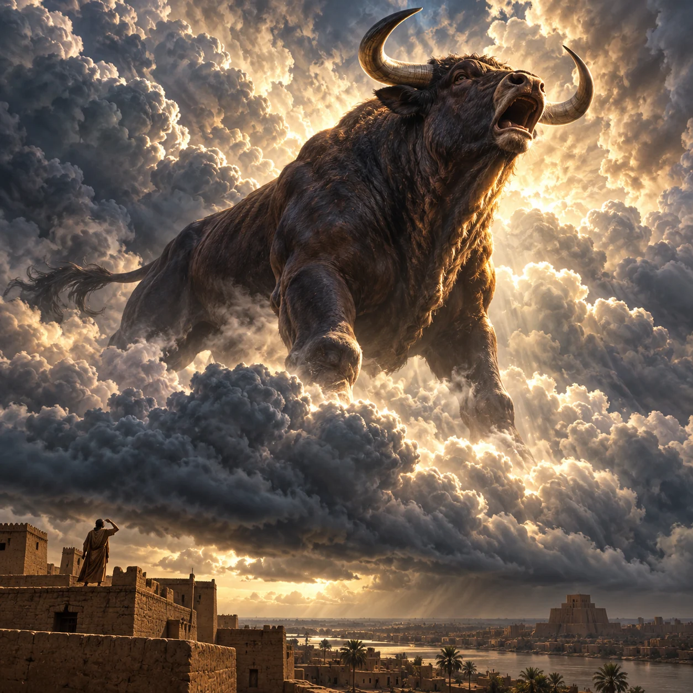
Documented great bull roaring above clouds during storms, not blended with anthropomorphic Anu.
Aura: Vast roiling storm clouds (anu-c13); warm silver cloud-edge light is compositional natural illumination.
Audit ciri dan sumber
- One natural great bull roaring over storm clouds — anu-c13.
- Sky-scale cloud environment grounded in sky deity domain — anu-c01.
- No invented lightning, wings or hybrid anatomy.
Viewed native PNG: colossal dark bull, one head and two horns, normal visible legs partly occluded by clouds, mouth roaring, enormous cloud banks above tiny ancient city; dramatic atmospheric light, no lightning, text, watermark or ungrounded effects.
Review sumberUse case: stylized-concept. Asset type: square premium Mythics encyclopedia painting. Create an original monumental painting of ANU in his explicitly documented storm-bull manifestation: one immense anatomically natural bull roaring above the clouds (anu-c13), Mesopotamian sky deity (anu-c01). Low camera angle from a tiny ancient mudbrick rooftop under vast towering storm cloud banks; bull dominates the upper sky with rich dark fur, strong neck, two natural horns, one head, four legs. Enormous roiling clouds and wind are the documented sky/storm effect; no lightning or invented energy beams. Cinematic warm silver cloud-edge illumination gives sacred imposing presence, naturalistic painterly detail, deep contrast, clearly readable silhouette, respectful ancient religious imagery. No humanoid fusion, wings, extra heads, extra legs, generic colored aura, text, logo, watermark, border, nudity or gore. Square image.
Cupid
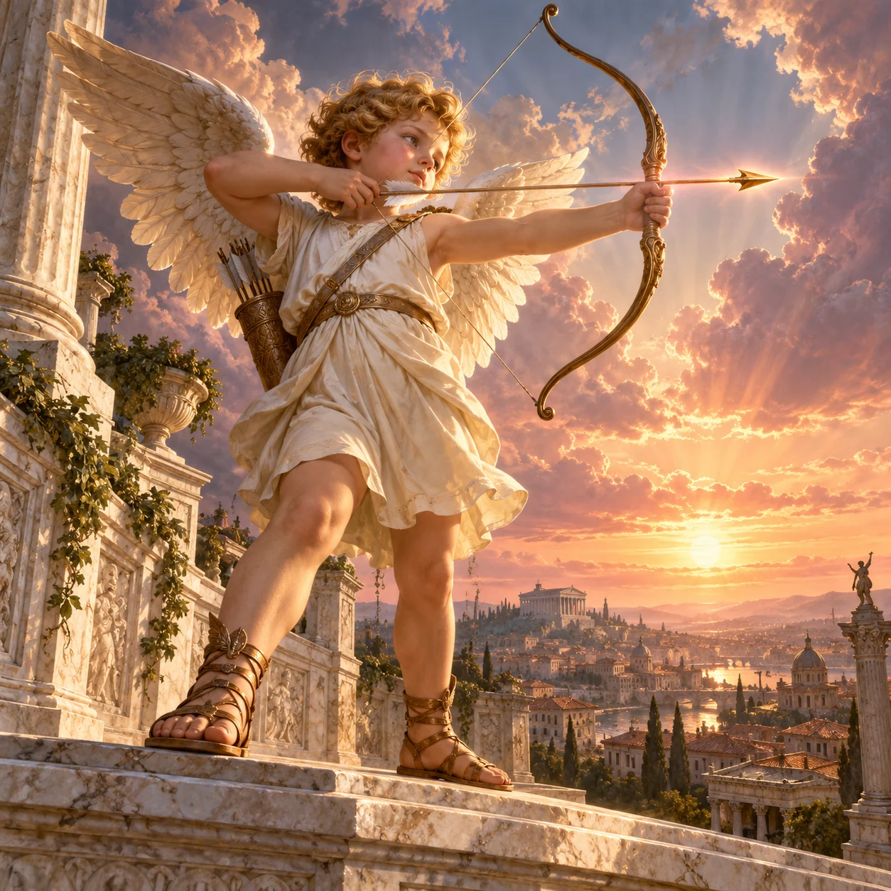
Clothed winged child with bow, arrow and quiver.
Aura: Warm reflected sunrise emphasizes arrow and love domain, artistic light only.
Audit ciri dan sumber
- Winged child — cupid-c03.
- Bow, arrow and quiver — cupid-c04.
- Love-inducing arrow narrative — cupid-c05; no invented energy beam.
Viewed native PNG: fully clothed winged child draws bow with arrow and visible quiver, two arms and normal child anatomy. Two feathered wings. Sunlight and tiny city create strong divine presence. Arrow tip catches warm bright light; no beam, text or watermark.
Review sumberUse case: stylized-concept. Square original premium painterly mythology illustration of CUPID, Roman god of love. One winged child deity wearing a fully opaque modest ivory tunic and sandals, two feathered wings, one head, two arms, two legs. He draws a bow with one elegant arrow, quiver on back, documented iconography cupid-c03/c04; arrows induce love cupid-c05. Monumental low camera angle over an ancient Roman marble terrace; distant tiny rooftops convey immense divine presence. Show love through his calm intent and a luminous warm rose-gold sunrise reflecting on the arrow, a painterly metaphor only, no energy beams or heart symbols. Bowstring and hands anatomically believable, feather structure clear. Majestic gentle divine confidence, dramatic cloud opening, rich textures and cinematic chiaroscuro, classical original design. Fully clothed child, no nudity, violence, extra limbs, text, watermark, border, game or film designs.
Cybele
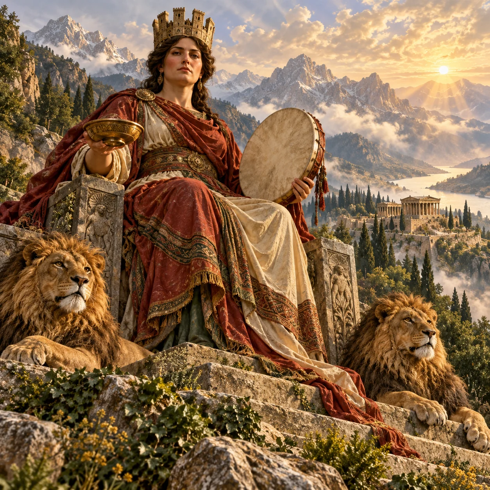
Enthroned Great Mother with mural crown, bowl, drum and lion companions.
Aura: Majestic wild nature environment and cinematic sunrise; no speculative healing energy.
Audit ciri dan sumber
- Enthroned woman with bowl, drum and mural crown — cybele-c09.
- Lion companions represent mistress of wild nature — cybele-c07.
- Wild nature domain expressed by mountainous forest landscape — cybele-c01.
Viewed native: one clothed enthroned woman with distinct mural crown, bowl and round frame drum, two lion companions; strong low viewpoint, vast natural mountains and sanctuary scale. Normal visible anatomy, no unsupported rays, text, watermark or nudity.
Review sumberUse case: stylized-concept. Create original square premium painterly illustration of CYBELE, Phrygian Great Mother and nature goddess. One fully clothed majestic adult goddess enthroned high over a mountain landscape, wearing a clearly architectural mural crown, holding shallow bowl and round frame drum, paired regal lions resting beside the stone throne; explicit cybele-c09/c07 iconography. Human anatomy one head two arms, hands hold one bowl and one drum. Vast wild mountains, forest and ancient hillside sanctuary beneath her, nature domain cybele-c01. Monumental low camera view, huge foreground throne and small distant sanctuary buildings, wind in rich woven robes, powerful calm maternal gaze, sunrise shafts through mountain mist, gold stone and deep green textures. No supernatural healing rays invented; majesty through nature environment and cinematic natural light. Respectful ancient deity, fully opaque clothing, no nudity, gore, modern fantasy armor, extra limbs, text, logo, border or watermark.
Enlil
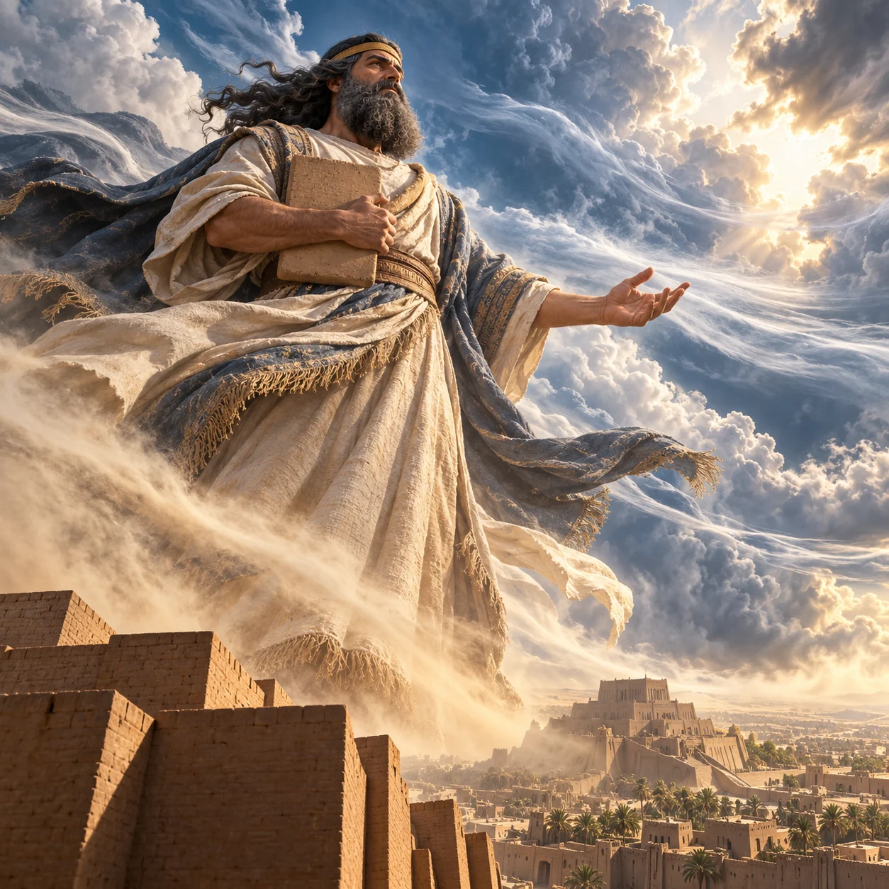
Editorial fully robed human deity bearing the documented Tablet of Destiny.
Aura: Monumental wind/cloud atmosphere grounded in Lord of Air domain.
Audit ciri dan sumber
- Tablet of Destiny — enlil-c10.
- Air and weather effects through turbulent clouds, dust and wind-blown robe — enlil-c01/c04/c13.
- Nippur sanctuary staging — enlil-c05.
Viewed native: bearded robed human with two arms, clay tablet held to chest; surrounding dust, streaming cloth and towering windswept clouds. Tiny city and ziggurat make monumental presence clear. No beams, extra limbs, text, watermark or nudity.
Review sumberUse case: stylized-concept. Square premium original monumental painterly mythology portrait of ENLIL, Mesopotamian Lord of Air (enlil-c01/c04). One dignified fully robed adult human male with one head and two arms, standing on towering mudbrick sanctuary terrace, clutching a blank clay Tablet of Destiny to his chest (enlil-c10), other hand extended into mighty streams of WIND indicated by flying dust, robe folds and revolving cloud banks. Nippur Mountain House sanctuary far beneath (enlil-c05). Camera extremely low, giant authoritative silhouette above tiny ancient buildings, tremendous silver-blue air currents with warm sunlight opening storm clouds, dramatic natural atmosphere grounded in air and weather domain enlil-c01/c13. Robe, beard and simple headband are editorial ancient Mesopotamian staging rather than asserted iconography; no skull horns. No invented lightning, wings, beams, magic symbols, writing, text, watermark, border, nudity or gore. Respectful sacred grandeur.
Geb
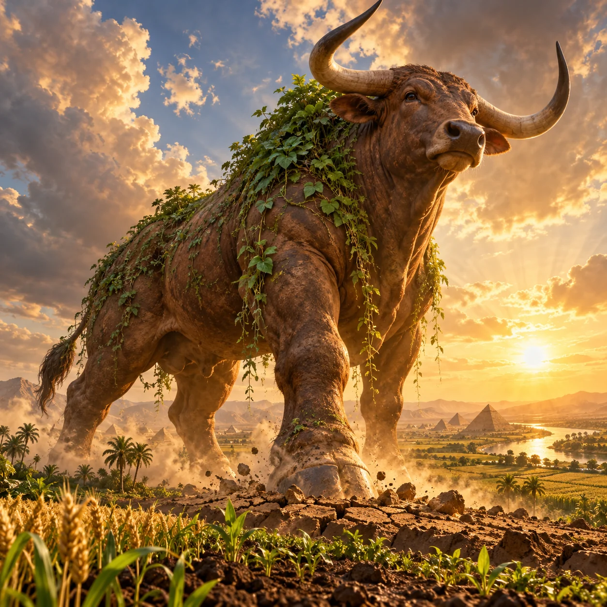
Documented bull form with vegetation on body, earthquake and crop-growth imagery.
Aura: Ground fissures, dust and crop growth express earthquake and fertility domain.
Audit ciri dan sumber
- One natural bull — geb-c05.
- Plants growing on body — geb-c10.
- Cracked trembling earth and fertile crops — geb-c02/c03.
Viewed native: single immense natural bull, two horns, four normal legs, thick green vines over back and shoulders; hoof beside cracked soil with dust and green shoots, farmland and tiny pyramids below. No magic beams, extra anatomy, text or watermark.
Review sumberUse case: stylized-concept. Square premium monumental painterly illustration of GEB in documented BULL manifestation (geb-c05), Egyptian earth god (geb-c01). A colossal anatomically natural bull, one head two horns four legs, stands over a vast agricultural Nile valley with small pyramids and fertile wheat fields for scale. Living green plants and tender vines grow on its broad shoulders and flank, documented body vegetation geb-c10. Trembling fractured soil and dust ripples below its mighty hoof hint at earthquake power geb-c02, while fertile shoots spring along the valley geb-c03. No gore or destruction victims. Very low camera angle, strong silhouette, muscular earth-colored hide, dramatic golden sunlight between dust clouds, rich painterly tactile soil and vegetation. Never combine human body and bull parts, no wings, fire, lightning or colored magic beams. Respectful ancient deity portrayal, no text, watermark, border, logo or modern borrowed design.
Hapi
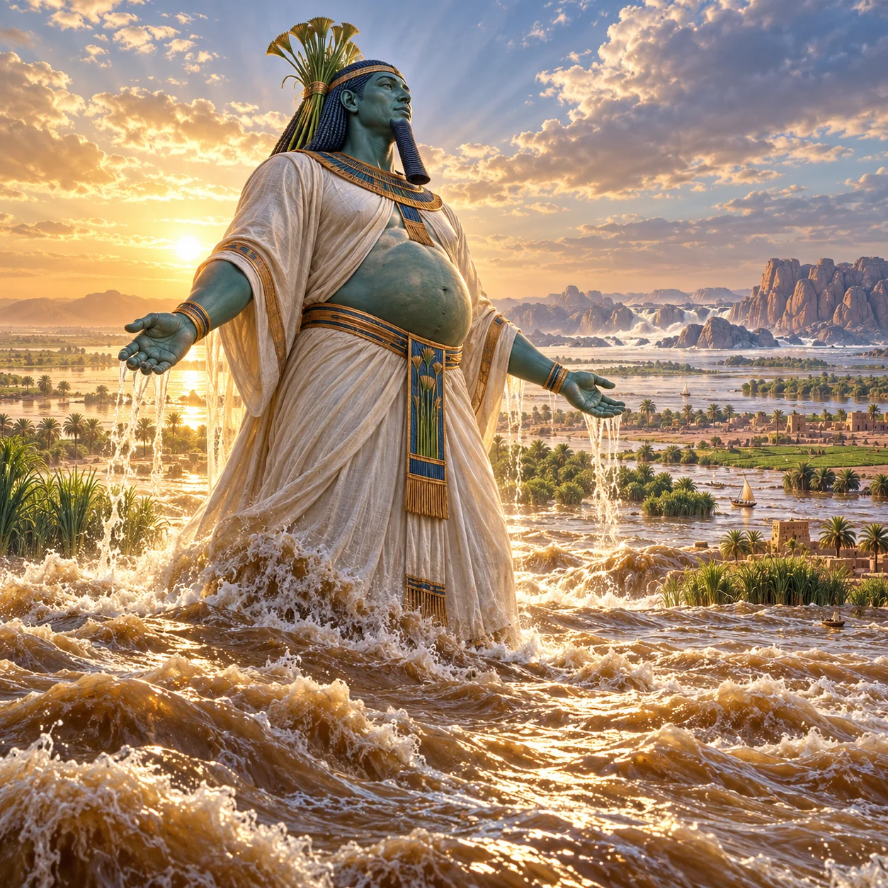
Blue-green rounded-bellied human deity with false beard amid annual fertile inundation.
Aura: Powerful brown flood currents and fertile river valley grounded in annual inundation.
Audit ciri dan sumber
- Rounded prominent belly and false beard — hapi-c04.
- Blue-green skin — hapi-c09.
- Annual flood and fertile vegetation — hapi-c01/c02/c03; papyrus emblem — hapi-c14.
- Chest draped in opaque linen to follow no-nudity policy.
Viewed native: blue-green adult human male-shaped deity, round belly, long false beard, papyrus behind head; chest draped with linen. Two arms held outward, natural water dripping from hands amid muddy flood, lush river fields and Aswan rocks. No explicit nudity, extra limbs, text or watermark.
Review sumberUse case: stylized-concept. Original square premium monumental mythology painting of HAPI, Egyptian deity of the annual Nile FLOOD (hapi-c01/c08). One adult male-shaped deity with blue-green skin, prominent rounded belly, characteristic long false beard and softly drooping chest shape visibly suggested beneath a fully opaque linen ceremonial robe (hapi-c04/c09); no exposed breast or nudity. Standing majestically among immense rising muddy river waters, rich fertile silt spreading toward green farmland and papyrus islands (hapi-c02/c03). Two arms held calmly outward as huge flood currents sweep around him, one head, no extra limbs. Tiny ancient river settlements and distant Aswan rocky cataract supply scale. Dramatic low angle, cinematic silver-blue water and gold sunrise, detailed painterly linen and foam. Flood nurtures fields; no destruction victims, magical light beams, lightning, wings, text, watermark, logo or border. Respectful Egyptian iconography.
Hecate
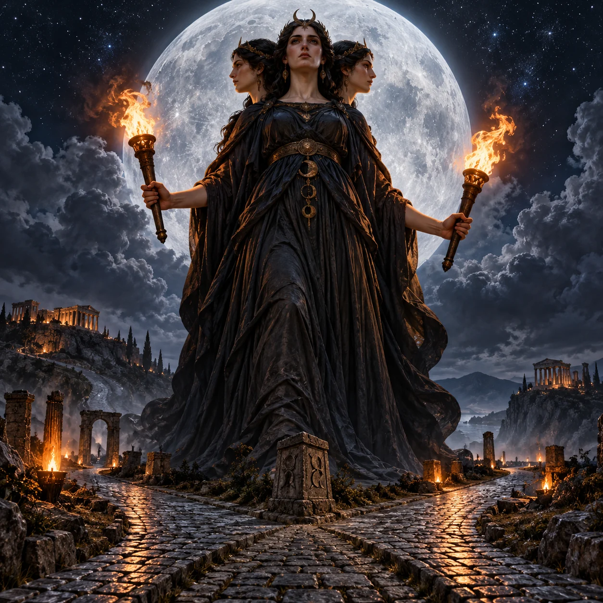
Three-headed single-body Hecate at crossroads, torches and moon association.
Aura: Torch fire, enveloping night and moonlight grounded in attributes and domains.
Audit ciri dan sumber
- Exactly three heads on one clothed human body with two arms — hecate-c13.
- Torches — hecate-c12; moonlit crossroads — hecate-c02/c14.
Viewed native: exactly three female heads, one fully draped body, two visible arms holding two torches; moon disk and stone crossroads. Crescent-shaped metal crown is an editorial moon-domain ornament, not anatomical horns. Monumental guardian silhouette, normal selected variant anatomy, no text or watermark.
Review sumberHECATE with EXACTLY THREE distinct young woman's heads attached to ONE fully clothed human body, TWO arms only, each hand carrying a burning torch. Three faces point in different directions; exactly one central face and two side-profile heads. Explicit single-body three-head variant hecate-c13. She towers over three converging ancient stone roads at a crossroads, colossal lunar disk and deep night sky behind, documented moon/crossroad domain hecate-c02/c14. Strong unmistakable silhouette, imposing guardian rather than grotesque monster, opaque flowing dark robe, torch fire casting copper light against silver moonlight. Use case: stylized-concept. Original square premium monumental painterly Mythics encyclopedia artwork. Low camera angle, tiny architectural references establish apparent cosmic scale, strong clear silhouette, rich traditional textures, dramatic cinematic lighting. Respectful depiction. No text, markings, border, watermark, logo, nudity, gore, copied movie/game/anime designs, unsupported extra limbs, beams or generic colored aura.
Inanna
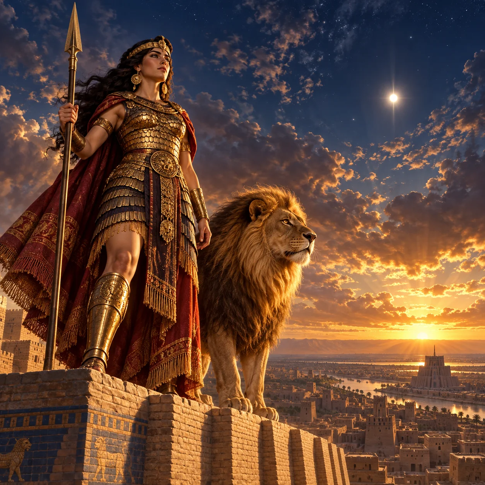
Armored Inanna with lion companion and Venus association.
Aura: Bright Venus above cinematic dawn; war domain expressed in armor, no speculative attacks.
Audit ciri dan sumber
- Armored battle-dress goddess — inanna-c11.
- Lion companion — inanna-c10.
- Morning/evening star Venus in sky — inanna-c03.
Viewed native: one armored human woman, two arms, long battle dress and boots, lion beside her, bright Venus over tiny Uruk-like city. Spear and headband are editorial ancient battle-dress accessories and carry no invented powers. No wings, hybrid anatomy, beams, text or watermark.
Review sumberINANNA, Sumerian war goddess, ONE human adult woman in opaque bronze ARMOR and battle dress, one head two arms two legs, accompanied by one magnificent lion. Stands atop high Uruk mudbrick rampart above tiny ancient buildings. Her posture is commanding, calm and brave. Bright planet VENUS shines in a huge dramatic predawn sky, grounded in inanna-c03, with cinematic dawn-gold edges on bronze and lion fur. No wings or invented horns; documented armor inanna-c11 and lion inanna-c10. Use case: stylized-concept. Original square premium monumental painterly Mythics encyclopedia artwork. Low camera angle, tiny architectural references establish apparent cosmic scale, strong clear silhouette, rich traditional textures, dramatic cinematic lighting. Respectful depiction. No text, markings, border, watermark, logo, nudity, gore, copied movie/game/anime designs, unsupported extra limbs, beams or generic colored aura.
Ishtar
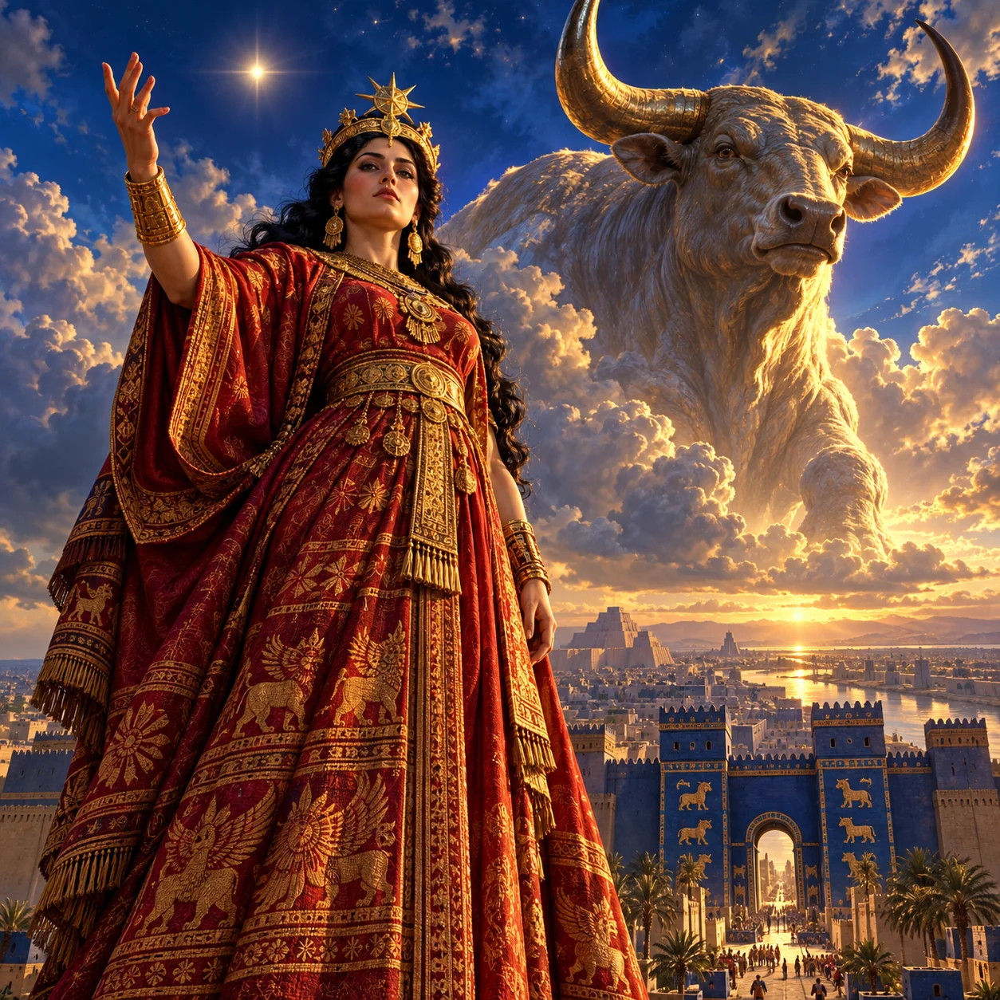
Human Ishtar alongside the borrowed Bull of Heaven, not fused anatomy.
Aura: Enormous heavenly bull and Venus create documented celestial spectacle.
Audit ciri dan sumber
- Human goddess — ishtar-c01, clothing design editorial.
- Distinct Bull of Heaven lent by Anu — ishtar-c12.
- Venus celestial backdrop — ishtar-c05.
Viewed native: one fully robed human goddess with two arms, separate huge bull looming in clouds, Venus above, tiny Mesopotamian city and gate. Star headpiece and patterned robe are editorial star-domain ornament. No fused anatomy, energy attack, text, watermark or nudity.
Review sumberISHTAR, Mesopotamian goddess of love and war, ONE regal adult human woman fully clothed in richly woven red-gold ancient robes, one head two arms, raising one commanding hand beside the enormous BULL OF HEAVEN that Anu lent her (ishtar-c12). The bull is a SEPARATE natural bull, one head two horns four legs, looming through high clouds behind her, never hybridized with goddess. She dominates the foreground of an ancient Uruk gateway; distant city tiny below, brilliant planet VENUS above her shoulder (ishtar-c05), twilight cobalt and gold cinematic natural illumination. Powerful majestic gaze, no human victims or gore, no wings or invented magical weapons. Use case: stylized-concept. Original square premium monumental painterly Mythics encyclopedia artwork. Low camera angle, tiny architectural references establish apparent cosmic scale, strong clear silhouette, rich traditional textures, dramatic cinematic lighting. Respectful depiction. No text, markings, border, watermark, logo, nudity, gore, copied movie/game/anime designs, unsupported extra limbs, beams or generic colored aura.
Khepri
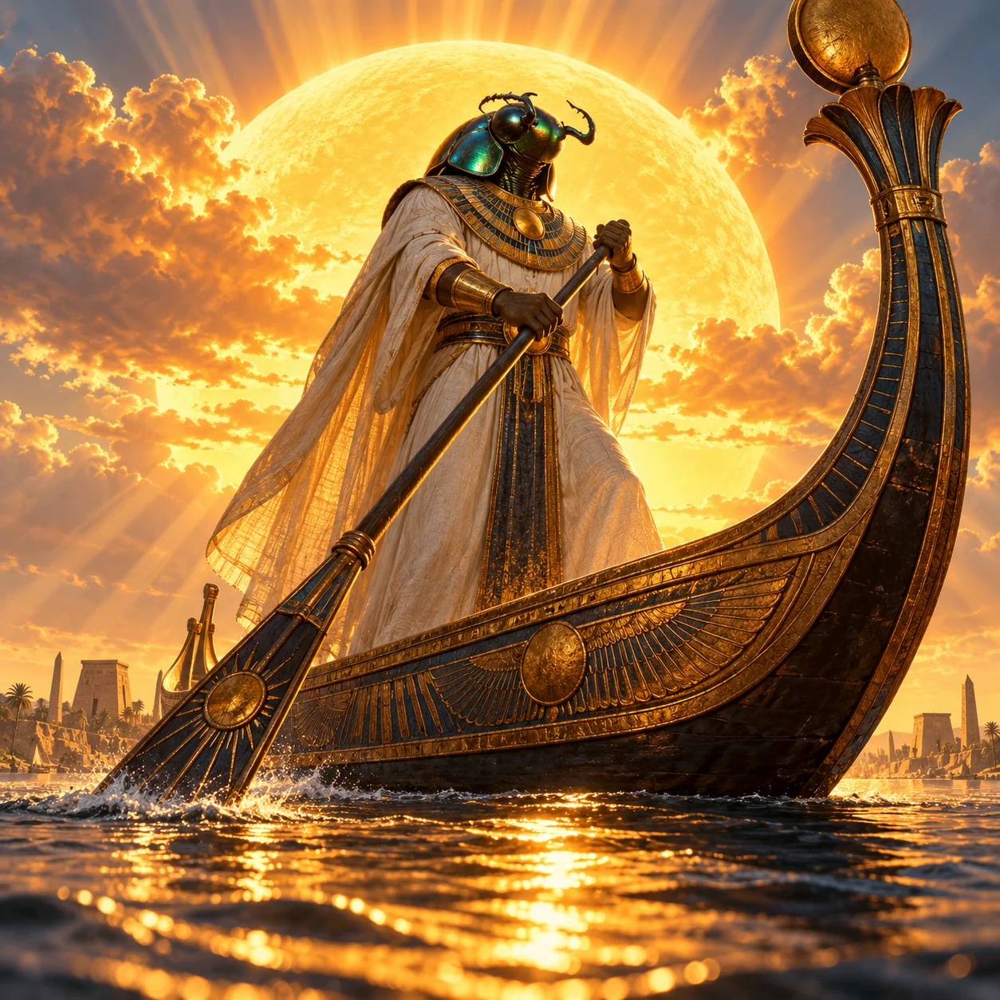
Scarab-faced humanoid steering solar barque at sunrise.
Aura: Blazing rising sun and radiant dawn grounded in solar aspect.
Audit ciri dan sumber
- Scarab face, one humanoid body — khepri-c01.
- Solar barque steering — khepri-c07.
- Rising solar disk and renewal — khepri-c01/c06.
Viewed native: recognizable metallic scarab head atop fully linen-clothed two-armed human body, rowing oar in a solar barque. Immense radiant solar disk and dawn clouds dominate background, tiny temples along river. No unsupported limb additions, energy weapons, text or watermark.
Review sumberKHEPRI, Egyptian rising sun deity, one fully clothed humanoid with a SINGLE clearly recognizable SCARAB-BEETLE face/head, metallic green-black beetle shell features, no human face. Two human arms steer the large oar of a richly carved SOLAR BARQUE (khepri-c07) above the Nile horizon, immense fiery golden SUN rises behind him (khepri-c01/c06), floods clouds with solar rays and warm radiance. One beetle head, two arms, long opaque linen robe covering body, no insect legs attached to torso. Tiny ancient shore buildings establish monumental divine scale. Sacred renewal and radiant majesty. Use case: stylized-concept. Original square premium monumental painterly Mythics illustration, very low camera angle, strong silhouette, rich tactile textures, cinematic contrast, respectful ancient religious figure. No text, glyphs, watermark, logo, border, nudity, gore, movie/game/anime borrowing, extra heads or limbs, ungrounded elemental effects.
Khnum
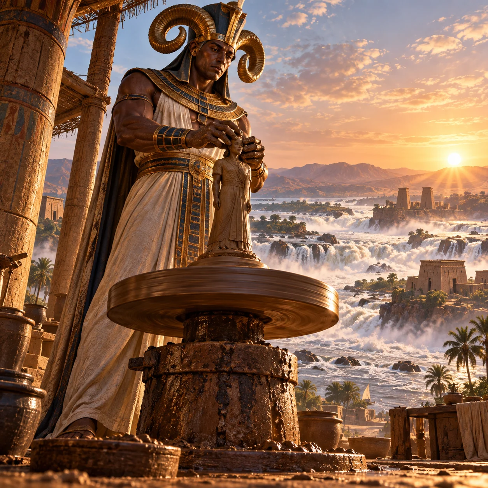
Ram-horned human creator at potter's wheel by Nile inundation.
Aura: Majestic Nile flood and creative pottery gesture, no speculative creation beams.
Audit ciri dan sumber
- Ram horn attributes — khnum-c08.
- Humans shaped from clay on potter wheel — khnum-c04.
- Nile cataract/inundation setting — khnum-c01/c02.
Viewed native: human face beneath ceremonial headpiece with paired curling ram horns; two hands shape one clothed clay human figure on spinning potter wheel. Enormous Nile cataracts and tiny temples behind, fully draped body, no extra limbs or magic beams. Headpiece face choice is editorial, accepted claim specifies horns only.
Review sumberKHNUM, Egyptian creator, one fully clothed sacred figure with human body and curling RAM HORNS attached to a ceremonial headpiece, no other invented animal anatomy. Accepted research mentions ram horns khnum-c08 but no exact face: use a dignified human face beneath headpiece, note artistic staging. TWO hands carefully shape a small fully clothed clay human figure upon a real spinning POTTER'S WHEEL (khnum-c04), monumental tall stance in ancient riverside workshop opening toward enormous NILE CATARACTS and fertile inundation (khnum-c01/c02). Huge foaming waters, tiny distant temples, calm concentrated gaze and warm sunrise. No generic magical glow, beams or extra arms. Use case: stylized-concept. Original square premium monumental painterly Mythics illustration, very low camera angle, strong silhouette, rich tactile textures, cinematic contrast, respectful ancient religious figure. No text, glyphs, watermark, logo, border, nudity, gore, movie/game/anime borrowing, extra heads or limbs, ungrounded elemental effects.
Maat
Menunggu gambar yang lolos audit
Min
Menunggu gambar yang lolos audit
Nut
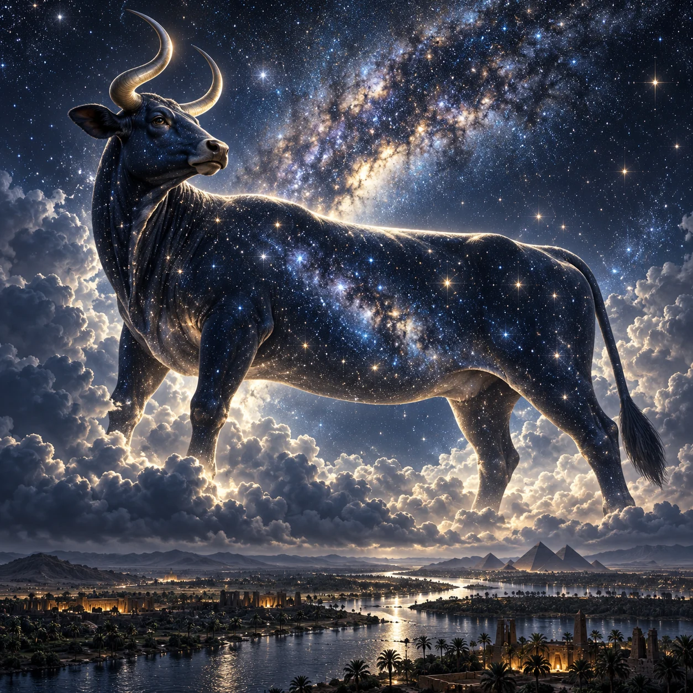
Documented celestial cow form, sky and stars represented by cosmic background.
Aura: Cosmic star field and sweeping heavens grounded in sky goddess domain.
Audit ciri dan sumber
- One cow, not humanoid-bovine fusion — nut-c03.
- Immense sky and stars — nut-c01/c10.
Viewed native: enormous celestial cow with one head, two natural horns, four legs, female bovine shape, above tiny Nile landscape. Stars cover both sky and cow as an artistic visualization of sky/stars domain, not a new anatomical claim; no human-bovine fusion. Cosmic scale and strong silhouette; no text or watermark.
Review sumberNUT, Egyptian goddess of sky and stars in her explicitly documented COW FORM (nut-c03): ONE enormous graceful natural cow, one head two natural horns four legs, standing in silhouette across vast night clouds above tiny Egyptian earth and Nile valley below. Cow body anatomically natural, not a person, NOT a bull, no udders emphasized, no wings. Cosmic stars and milky luminous heavens fill background, sky-domain nut-c01/c10. Elegant midnight blue and silver atmospheric rim light, gentle sacred maternal presence, colossal scale from low angle, distant pyramids and river as tiny references. Do not force human star-covered-body iconography onto this separate cow variant. Use case: stylized-concept. Original square premium painterly Mythics illustration, monumental low camera angle, powerful clear silhouette, rich tactile textures, dramatic cinematic contrast, respectful ancient sacred depiction. No text, writing, watermark, logo, border, nudity, gore, movie/game/anime copying, extra heads, extra limbs or unsupported wings.
Sekhmet
Menunggu gambar yang lolos audit
Serapis
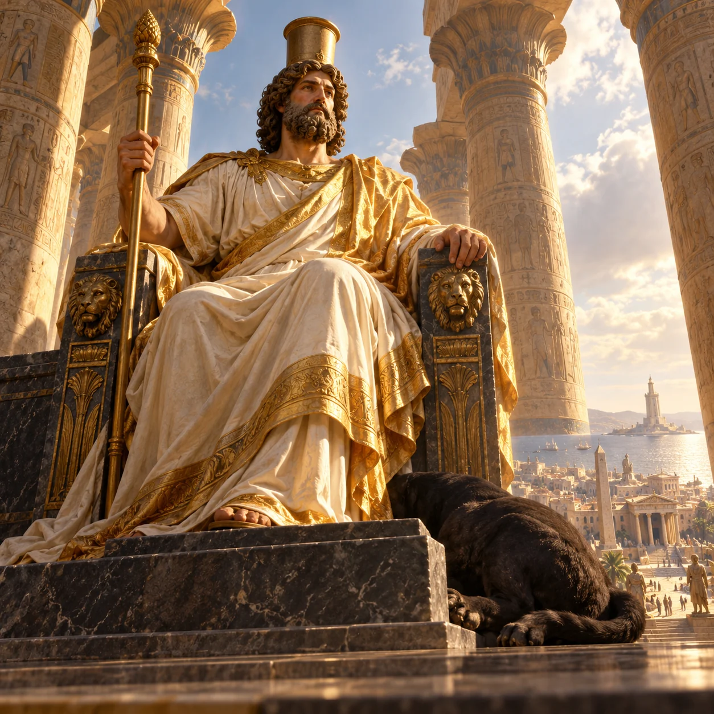
Enthroned Graeco-Egyptian figure with grain measure head attribute and shadowed canine companion.
Aura: Majestic Alexandrian temple light only; no explicit elemental power effect documented.
Audit ciri dan sumber
- Enthroned Greek-appearing clothed figure — serapis-c09/c10.
- Grain measure on head and Cerberus at feet — serapis-c10; canine head count left unseen.
Viewed native: clothed bearded man enthroned with grain-measure cylinder on head, two arms, ordinary staff as editorial regal prop. Canine body lies at feet with head hidden, so no unsupported count asserted. Graeco-Egyptian columns, distant harbor and natural golden light. Decorative stone figures are art ornament, no readable text or watermark.
Review sumberSERAPIS, Graeco-Egyptian sacred deity: ONE regal bearded adult HUMAN MAN enthroned, fully draped in heavy white-and-gold classical robes, a cylindrical GRAIN MEASURE (modius) worn on head, grounded in Alexandrian cult statue serapis-c10. One head two arms, calm supreme authority. At feet a large dark canine companion symbolizing Cerberus curls in deep shadow, its head intentionally hidden behind foreground throne base rather than asserting unsupported count. Towering stone Serapeum columns at Alexandria, tiny distant temple precinct below, massive throne dominates low camera frame, warm shaft of natural sunlight, no magic flames, wings, invented hybrid anatomy or extra heads. Use case: stylized-concept. Square premium monumental painterly Mythics encyclopedia illustration. Original design, strong clear silhouette/composition, rich textures, cinematic high contrast, respectful living or ancient religion. No text, watermark, logo, border, nudity, gore, modern movie/game/anime borrowing, extra limbs or unsupported anatomy.
Yama
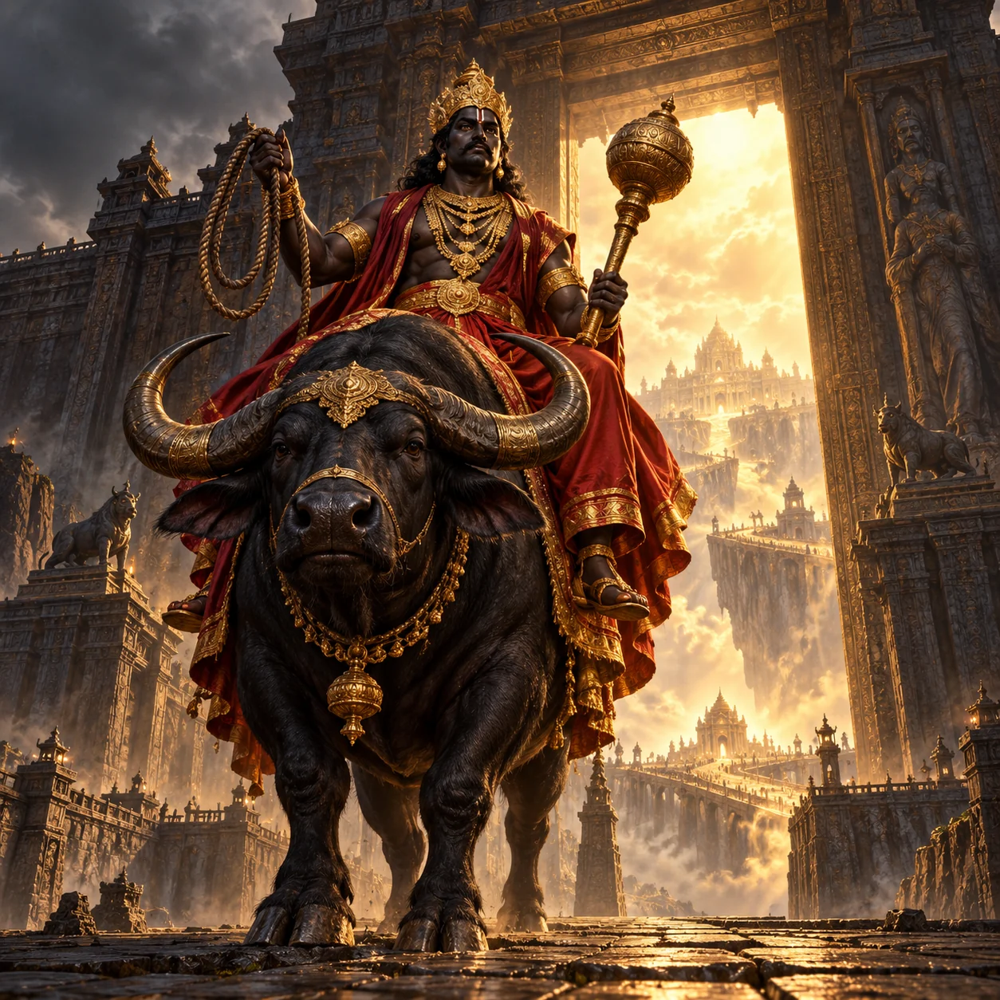
Dark-skinned Yama mounted on buffalo with noose and mace.
Aura: Solemn underworld judgment atmosphere; no unsupported flames or energy attacks.
Audit ciri dan sumber
- Dark-skinned deity riding buffalo — yama-c07.
- Noose and mace — yama-c08/c10.
- Realm of death/justice expressed as solemn gate — yama-c01/c05.
Viewed native: dark-skinned regal adult male seated on natural buffalo, two arms hold rope noose and mace; buffalo head, paired horns and normal legs. Dramatic monumental gate and distant judgment architecture, no tortured souls, magic fire, extra limbs, text or watermark. Male chest visible above robe but no explicit nudity.
Review sumberYAMA, Hindu god of death and justice: ONE dark-skinned adult male deity, fully clothed in richly draped red-gold ceremonial robes, seated atop ONE enormous natural black water BUFFALO, documented yama-c07. Two arms, one holds a looped NOOSE rope and other a solid MACE, yama-c08/c10. Buffalo one head two curved horns four legs. Solemn majestic judicial gaze, not monstrous or cruel, massive stone gateway toward the ancestors' realm behind, tiny distant architecture sets monumental scale. Dramatic low viewpoint, deep charcoal atmosphere and golden natural light from gate, no skulls, tortured people, bloody violence, flames or ghost-energy beams invented. Use case: stylized-concept. Square premium monumental painterly Mythics encyclopedia illustration. Original design, strong clear silhouette/composition, rich textures, cinematic high contrast, respectful living or ancient religion. No text, watermark, logo, border, nudity, gore, modern movie/game/anime borrowing, extra limbs or unsupported anatomy.
Ahura Mazda
Menunggu gambar yang lolos audit
Anuket
Menunggu gambar yang lolos audit
Atum
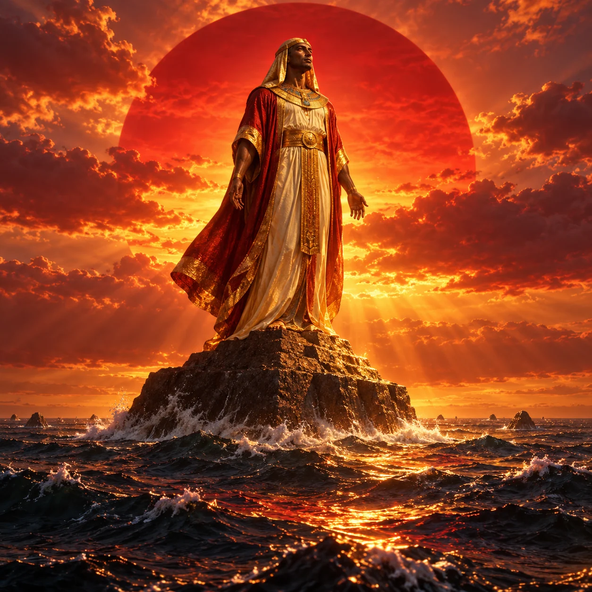
Primordial deity emerging on benben mound from waters at evening sun.
Aura: Golden-red evening solar radiance over primordial waters grounded in creation and evening-sun domains.
Audit ciri dan sumber
- Primordial water and benben mound — atum-c08.
- Evening sun — atum-c04.
- Human representation editorial; no specific unsupported crown.
- Traditional human form is explicit in atum-c15 quote.
Viewed native: robed human man with simple cloth headdress, one head and two arms standing on first rocky mound amid dark ocean; vast evening solar disk and sunset radiance. Matches c08 emergence setting and c04 solar aspect. Body/clothing editorial; no unclaimed hybrid parts, magic attack, text or watermark.
Review sumberATUM, Egyptian self-created primordial deity (atum-c01/c02), ONE fully robed adult HUMAN male with one head two arms, simple dignified cloth headdress only, no horn or animal head. He stands on the first BENBEN MOUND rising from endless dark PRIMORDIAL WATERS (atum-c08), vast deep-red EVENING SUN behind him (atum-c04), luminous sunset rays pour across waves, tiny receding stone mound details create monumental scale. Serene ancient creator authority, robe rich gold-red, foaming waters around first land and huge sky as creation-domain effect. No invented lightning, fire attacks, extra arms, hieroglyphs, or human victims. Use case: stylized-concept. Original square premium monumental painterly Mythics encyclopedia image. Low viewpoint, powerful clear silhouette, rich tactile textures, cinematic high contrast. Respectful sacred portrayal, no text, watermark, logo, border, nudity, gore, copied films/games/anime, extra heads or limbs.
Ceres
Menunggu gambar yang lolos audit
Mitra
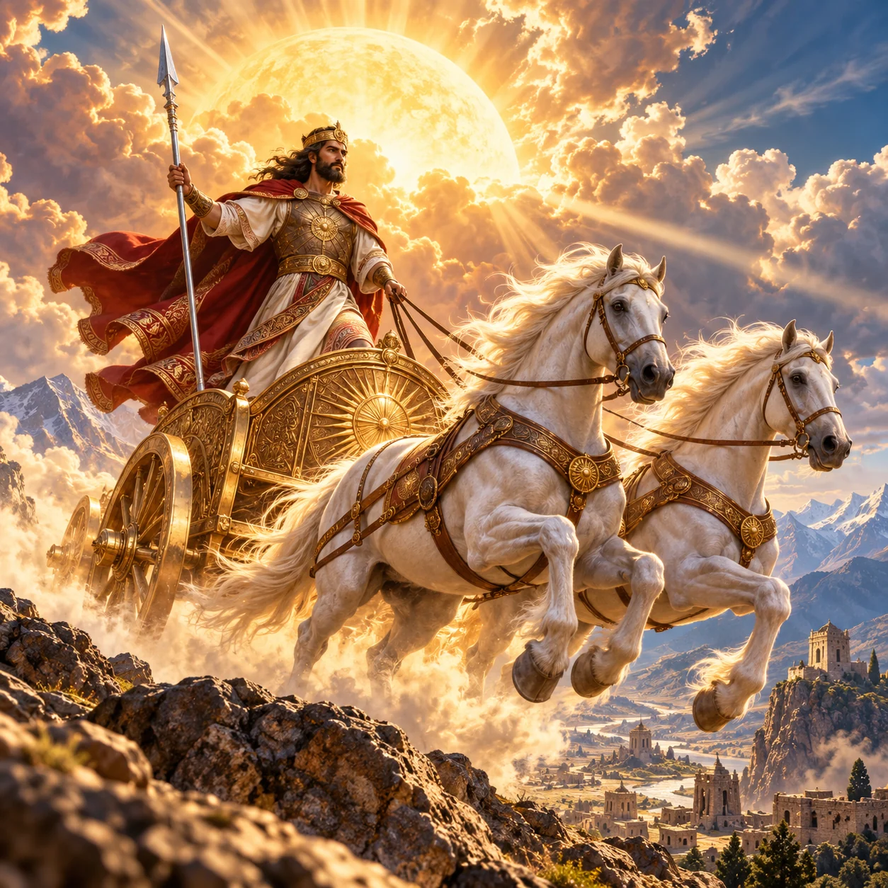
Persian Mithra bright white-horse chariot and silver spear, distinct from many-eyed hymn form.
Aura: Blazing sunrise and swift white-horse motion grounded in c04/c08/c13.
Audit ciri dan sumber
- Bright chariot drawn by white horses — mitra-c08.
- Silver spear — mitra-c09.
- Rising sun association — mitra-c04.
- Use chariot depiction, no literal blending of separate many-eyed hymn c14.
Viewed native: one human male with two arms, silver spear, bright chariot drawn by two white horses, immense rising solar disk and swift billowing robes. Selected Persian chariot form, not many-eyed hymn variant. No bull-killing, extra anatomy, beams, text or watermark.
Review sumberMITRA, depict Persian MITHRA's documented bright chariot form, explicitly distinct from Roman Mithras (mitra-c05). ONE fully clothed regal human adult male, one head TWO arms, wearing ancient Iranian woven robes and modest bronze breastplate, holding one SILVER SPEAR (mitra-c09) in a BRIGHT CHARIOT drawn by WHITE HORSES (mitra-c08). Two white horses clearly visible pulling side-by-side, no need invent fixed count. Immense radiant RISING SUN behind clouds (mitra-c04), swift wind and horse motion (c13). Mountain horizon and tiny ancient stone buildings provide scale. No literal thousand ears/ten-thousand eyes from separate hymn variant c14; no bull-killing scene, halo beam attack or hybrid anatomy. Use case: stylized-concept. Original square premium monumental painterly Mythics encyclopedia painting, very low camera angle, huge apparent scale with tiny architecture, dramatic cinematic high contrast, strong silhouette, respectful religion. No text, writing, watermark, logo, border, gore, nudity, copied film/game/anime, unsupported limbs or powers.
Nephthys
Menunggu gambar yang lolos audit
Nike
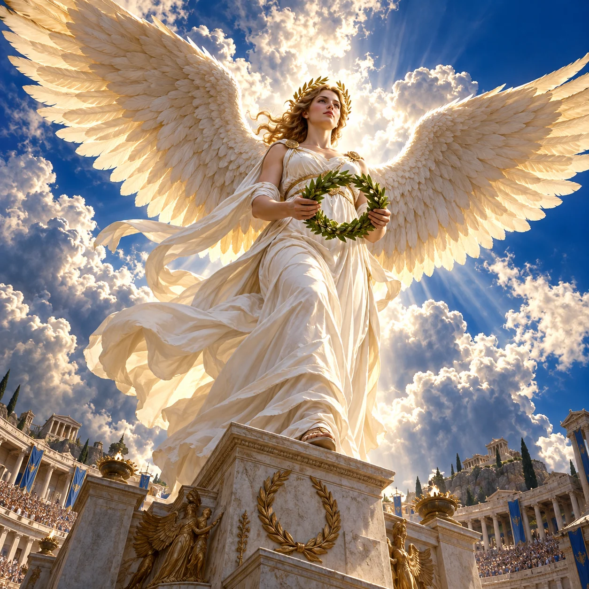
Winged Nike alighting with victory wreath.
Aura: Airborne alighting movement grounded in wings, natural sun radiance as lighting.
Audit ciri dan sumber
- Winged goddess evoking alighting — nike-c05.
- Victory wreath — nike-c06.
- Victory monumental setting — nike-c01/c13.
Viewed native: one draped human woman with two large feathered wings, two hands hold green victory wreath while alighting on stone monument above tiny stadium. Strong low angle and dawn radiance, no weapons or invented powers, text or watermark.
Review sumberNIKE, Greek goddess of victory: ONE fully clothed adult woman with TWO enormous feathered WINGS, two arms, one head, descending/alighting on high stone victory monument (nike-c05/c13), holds a clear green LAUREL VICTORY WREATH in front with two hands (nike-c06). Flowing opaque white classical gown, bare forearms only, no nudity. Low camera from tiny ancient stadium buildings below, wing silhouette dominates huge dawn sky, bright natural sunlight pierces clouds behind, gold-white against deep cobalt. Courageous triumphant benevolent face, tactile feathers and cloth, no sword, lightning, magic beams or invented warrior-animal anatomy. Use case: stylized-concept. Original square premium monumental painterly Mythics encyclopedia painting, very low camera angle, huge apparent scale with tiny architecture, dramatic cinematic high contrast, strong silhouette, respectful religion. No text, writing, watermark, logo, border, gore, nudity, copied film/game/anime, unsupported limbs or powers.
Nyx
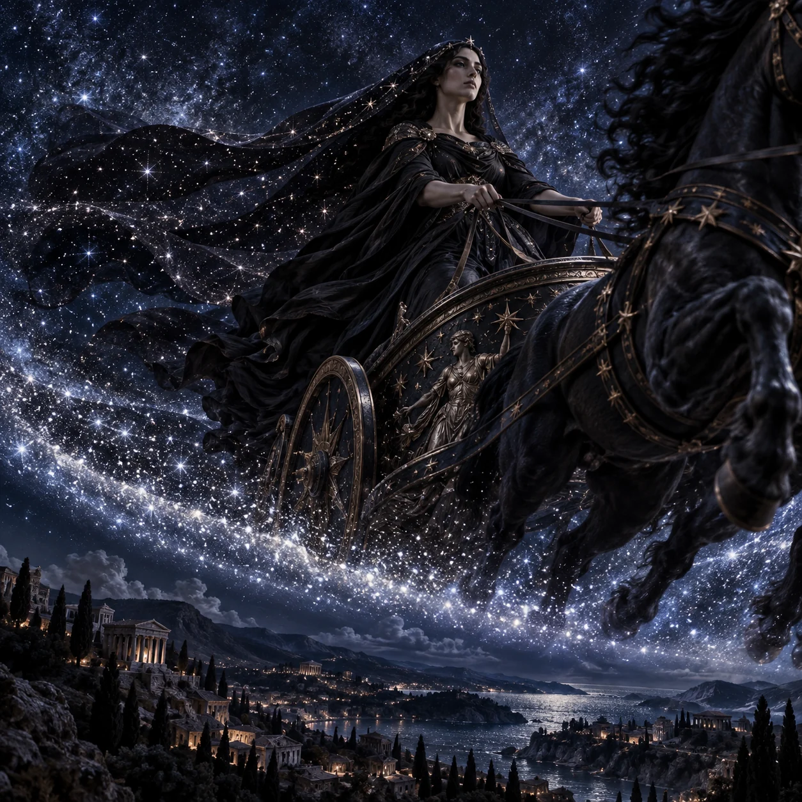
Wingless charioteer Nyx with black starry veil, documented alternate.
Aura: Stars follow in wake and enveloping night explicitly nyx-c09.
Audit ciri dan sumber
- Goddess driving chariot with black or starry veil — nyx-c07/c09.
- Immense enveloping night — nyx-c01/c02.
- No wings; charioteer alternate selected.
Viewed native: one fully draped wingless woman with two arms driving dark chariot, black starry veil trails into literal star-filled wake above tiny Greek valley. Natural horse foreground partially cropped, no invented wings, extra heads, lightning, text or watermark. Clear monumental night-domain presence.
Review sumberNYX, primordial night goddess, ONE fully clothed regal woman in black draped robe and long STARRY BLACK VEIL, one head TWO arms driving a majestic classical CHARIOT (nyx-c07/c09). NO WINGS: select charioteer alternative. Chariot sweeps across enormous deep indigo NIGHT sky, STARS visibly following her wake as documented nyx-c09, ordinary dark horses partially in foreground, no fixed count asserted. Low camera, tiny sleeping Greek towns below, powerful solemn gaze, vast cold silver moonless starlight, textured black cloth, night itself becomes monumental atmosphere, no lightning or flame weapons. Use case: stylized-concept. Original square premium monumental painterly Mythics illustration. Very low camera angle, clear powerful silhouette, cinematic high contrast, rich cloth/stone/nature detail. No text, letters, watermark, border, logo, nudity, gore, copied movie/game/anime, unsupported powers or body parts.
Ptah
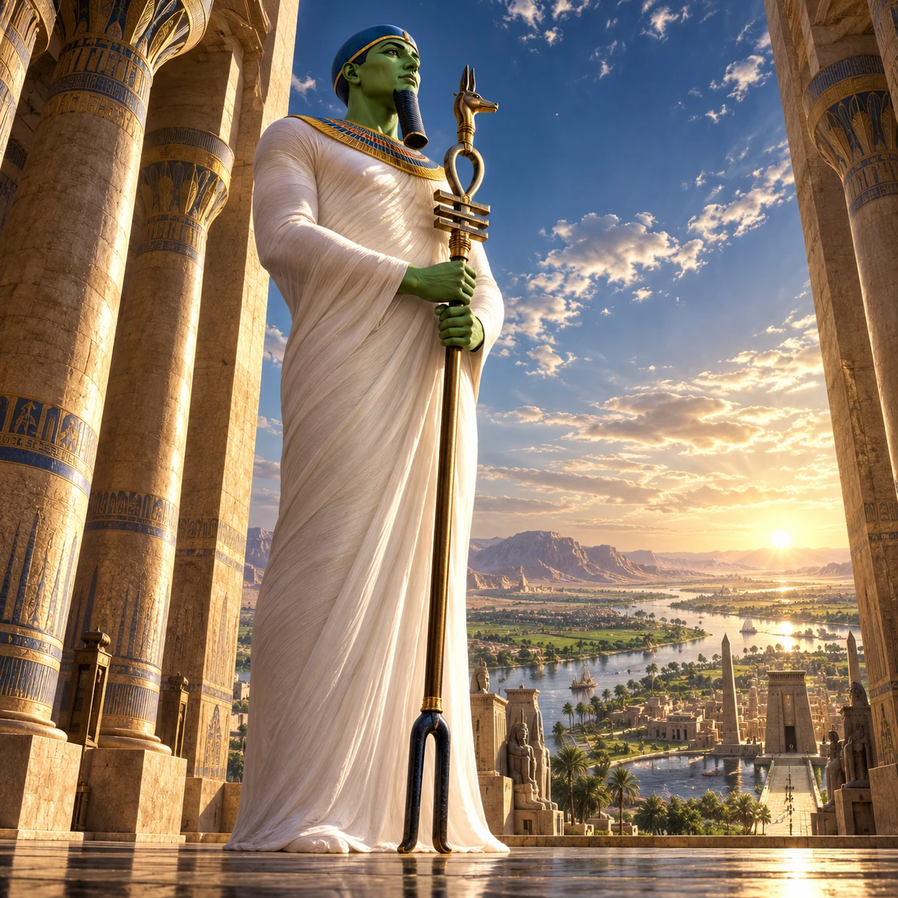
Green-skinned shrouded Ptah with skullcap and combined was-ankh-djed staff.
Aura: Vast newly ordered landscape beneath radiant sky symbolizes creation; no claim of emission beam.
Audit ciri dan sumber
- Green-skinned man in close shroud — ptah-c08.
- Skullcap and staff combining was, ankh and djed — ptah-c09/c13.
- Creation by speech expressed through surroundings — ptah-c04.
Viewed native: green-skinned man in close opaque shroud, skullcap, divine false beard and two hands clasping combined was-animal-top, ankh loop, stacked djed bands, forked-base staff. Correct single head, normal two arms, natural landscape sunrise rather than speech beam. Temple ornament not readable caption; no watermark.
Review sumberPTAH, Egyptian creator/craftsmen god, ONE GREEN-SKINNED adult human man in close-fitting fully opaque white SHROUD, distinctive small SKULLCAP and divine beard, ONE head TWO arms/hands emerging at chest to hold a single combined WAS-ANKH-DJED SCEPTRE: long was shaft with forked bottom and stylized animal top, ankh loop and djed horizontal stacked bands combined around upper shaft (ptah-c08/c09/c13). He dominates immense Memphis stone hall and created landscape beyond, tiny architectural structures and large ordered sky suggest creation through thought/speech ptah-c04, natural morning light not speech laser. Still authoritative upright figure, no wings, horns or extra anatomy. Use case: stylized-concept. Original square premium monumental painterly Mythics illustration. Very low camera angle, clear powerful silhouette, cinematic high contrast, rich cloth/stone/nature detail. No text, letters, watermark, border, logo, nudity, gore, copied movie/game/anime, unsupported powers or body parts.
Rādhā
Menunggu gambar yang lolos audit
Sati
Menunggu gambar yang lolos audit
Shu
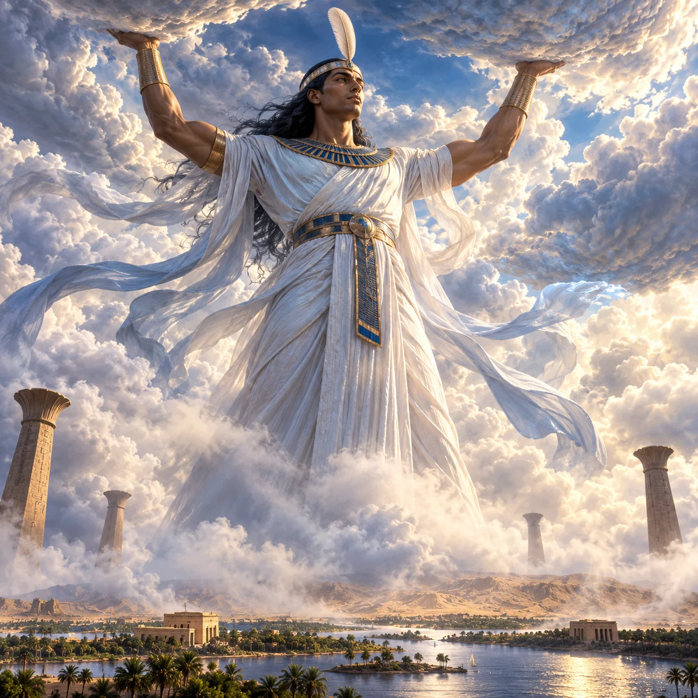
Human Shu with ostrich feather supporting sky over mist, not lion-headed alternative.
Aura: Huge air/mist/cloud layer separates earth and sky grounded in c05/c07.
Audit ciri dan sumber
- Human body with ostrich feather — shu-c06/c10.
- Mist/cloud air domain — shu-c01/c07/c14.
- Four cardinal sky-support pillars — shu-c15.
Viewed native: single fully robed human man, two normal arms raised to support clouds, ostrich feather head ornament; four stone sky pillars, mist/cloud air layer above tiny Nile. Correct air-domain spectacle, no lion head in selected human variant, no wings, lightning, text or watermark.
Review sumberSHU, Egyptian primordial AIR deity, ONE HUMAN adult man fully clothed in opaque white-blue linen, one head TWO arms raised as if supporting the heavens; SINGLE OSTRICH FEATHER upright in headband (shu-c06/c10). Immense banks of luminous cooling MIST and CLOUDS swirl across space between tiny earth/Nile and vast high sky (shu-c05/c07/c14). Four distant stone PILLARS at cardinal corners symbolize sky supports shu-c15, not extra limbs. Calm strong guardian, air expressed with streaming cloth and silver-blue clouds, no lightning, wings, lion head or force beams. Use case: stylized-concept. Original square premium monumental painterly Mythics encyclopedia portrait. Extremely low viewpoint, tiny architecture creates vast apparent divine scale, clear silhouette, rich detail, cinematic light/contrast. Respectful sacred depiction, no text, watermark, logo, border, gore, nudity, film/game/anime copying, unsupported body parts.
Sin
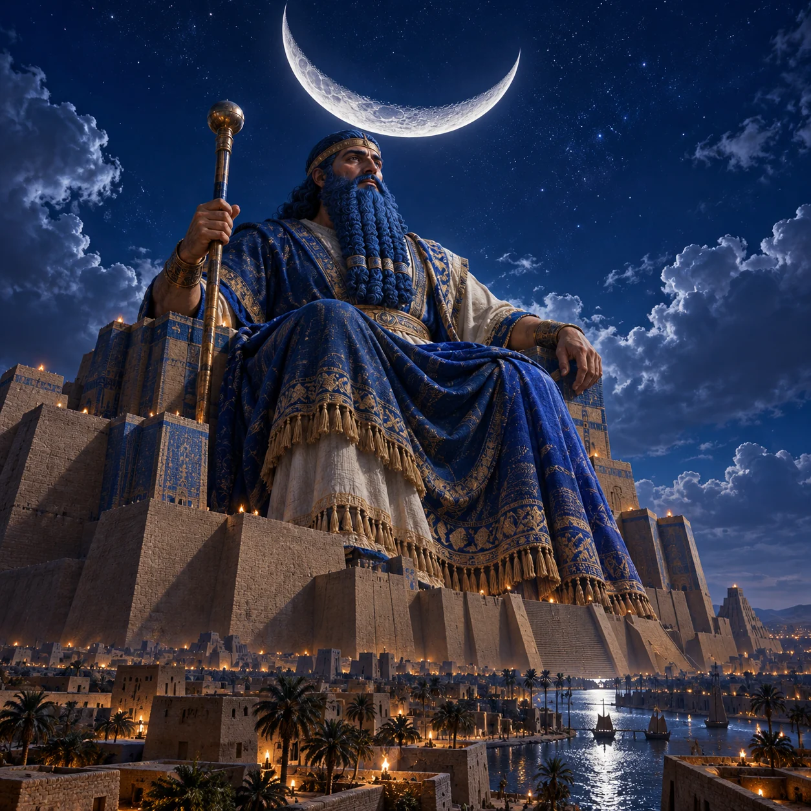
Seated Sin/Nanna with long lapis beard and crescent above.
Aura: Enormous luminous crescent and cold moonlight grounded in moon domain.
Audit ciri dan sumber
- Seated human man with long lapis-lazuli beard — sin-c08.
- Crescent moon above — sin-c08; lunar domain — sin-c01.
- Ur ziggurat setting — sin-c03.
Viewed native: seated man with long lapis-blue beard, two arms, full robes and giant crescent above head; monumental Ur ziggurat and small city. Staff is editorial regal prop with no magic effect. Strong lunar silhouette, no horns on skull, wings, text or watermark.
Review sumberSIN/NANNA, Mesopotamian moon/wisdom god. ONE seated adult human man in full opaque layered robes, LONG LAPIS-LAZULI BLUE BEARD, one head TWO arms, documented sin-c08. A vast clear CRESCENT MOON suspended ABOVE him, not attached as skull horns, moon domain sin-c01. Seated high on stone terrace at Ur ziggurat (sin-c03), tiny ancient city beneath, silver lunar illumination against cobalt night, rich lapis beard/robe textures, composed wise authority. No extra eyes, wings, lightning, magic beams, bright sun or readable clay writing. Use case: stylized-concept. Original square premium monumental painterly Mythics encyclopedia portrait. Extremely low viewpoint, tiny architecture creates vast apparent divine scale, clear silhouette, rich detail, cinematic light/contrast. Respectful sacred depiction, no text, watermark, logo, border, gore, nudity, film/game/anime copying, unsupported body parts.
Sita
Menunggu gambar yang lolos audit
Surya
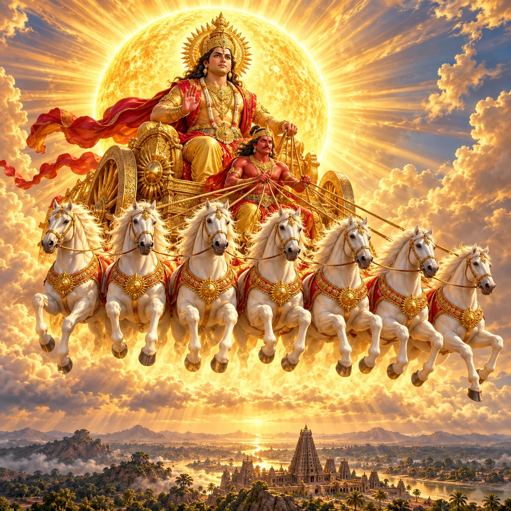
Surya on golden chariot drawn by exactly seven horses with red Aruna as charioteer.
Aura: Blazing solar disk/rays and sky journey grounded in sun domain and chariot deed.
Audit ciri dan sumber
- Exactly SEVEN horses — surya-c02.
- Golden chariot; distinct RED Aruna driver — surya-c02.
- Solar radiance — surya-c01.
Viewed native: EXACTLY seven separate white horse heads counted left to right pulling gold chariot, distinct red-skinned Aruna charioteer with reins before Surya. Both figures have one head/two arms, regal solar disk and radiance, tiny temple landscape below. No extra horses, text or watermark; explicit c02 horse count satisfied.
Review sumberSURYA, Hindu SUN god (surya-c01), regal adult HUMAN male fully clothed gold-red robes, one head two arms, on GOLDEN CHARIOT. EXACTLY SEVEN WHITE HORSES pull it in one clearly countable row, evenly spaced separate heads: 1,2,3,4,5,6,7; show seven horse heads and normal bodies, no overlaps hiding count, no extra horse. Separate RED-SKINNED ARUNA charioteer in front holding reins (surya-c02), two arms one head, smaller than main Surya. Front three-quarter LOW CAMERA below chariot, enormous blazing solar disk behind Surya floods sky with golden sun-rays, tiny Indian temple far below for scale. Respectful radiant benevolent deity, rich painterly textures, no sword, wings, extra limbs, readable numbers or text. Count seven horses exactly. Use case: stylized-concept. Original square premium monumental painterly Mythics illustration. Very low angle, enormous apparent scale, clear strong silhouette, cinematic contrast, rich tactile detail. Respectful sacred portrayal; no text, watermark, logo, border, nudity, gore, film/game/anime copying, unsupported anatomy or effects.
Tartarus
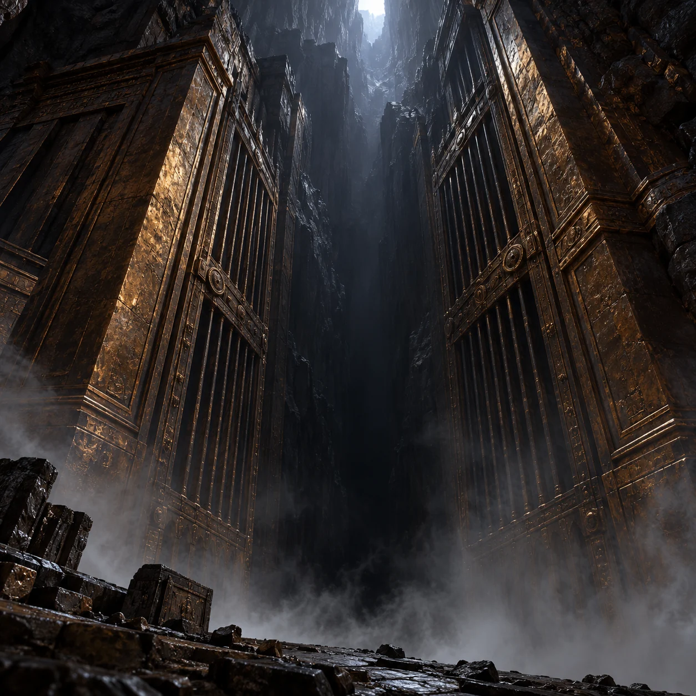
Elemental nonhuman pit deity with iron gates and bronze walls.
Aura: Immense darkness and abyss depth grounded in underworld pit nature; no unclaimed fire.
Audit ciri dan sumber
- Pit itself, not human deity — tartarus-c02.
- Dark cosmic lowest depth — tartarus-c03/c15.
- Iron gates and bronze walls — tartarus-c07/c10.
Viewed native: elemental abyss itself with towering bronze-colored walls and great iron gate bars, deep dark pit beneath rock foundations. No human-shaped deity, faces in stone, unclaimed flames/lava, demon body or victims. Low angle and tiny stone blocks establish immense scale, no text or watermark.
Review sumberTARTARUS, Greek primordial deity who IS the UNDERWORLD PIT, not a human figure (tartarus-c02). Show a colossal immeasurably deep DARK ABYSS beneath the foundations of Earth (c03/c15), sheer monumental BRONZE WALLS and enormous wrought IRON GATES disappearing toward bottomless blackness (c07/c10). Low camera from a tiny rocky ledge at gate base, tiny fallen stone blocks establish giant scale. Terrifying elemental presence through depth, weight, enormous gate silhouette, sparse cold reflected light from remote crack high above and dense natural ground haze. No human face in rocks, no giant body, guards not requested, no demons, chains on victims, flames or lava unsupported. Square rich premium painterly artwork. Use case: stylized-concept. Original square premium monumental painterly Mythics illustration. Very low angle, enormous apparent scale, clear strong silhouette, cinematic contrast, rich tactile detail. Respectful sacred portrayal; no text, watermark, logo, border, nudity, gore, film/game/anime copying, unsupported anatomy or effects.
Varuna
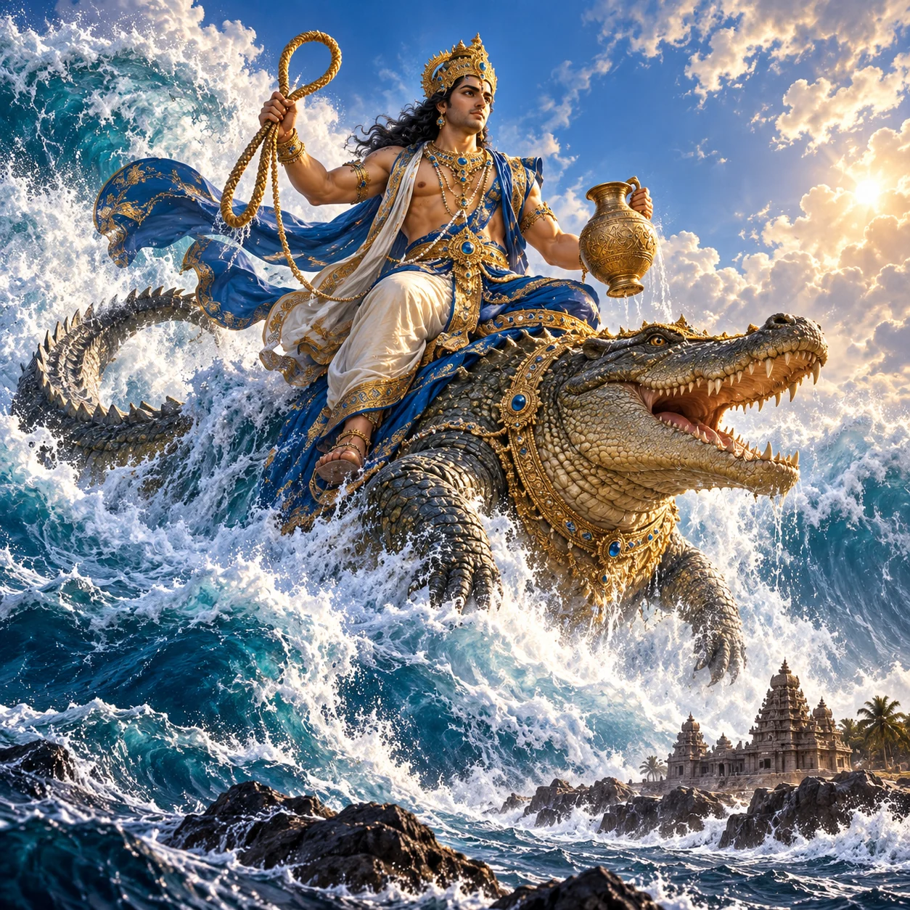
Youthful Varuna riding crocodile-like Makara with pasha and pitcher.
Aura: Enormous ocean currents and waves grounded in lord-of-water domain.
Audit ciri dan sumber
- Youthful man on crocodile-like Makara — varuna-c06 exact quote.
- Noose and pitcher — varuna-c07.
- Ocean/river domain — varuna-c04.
Viewed native: youthful human man, two arms carrying clear pasha loop and pitcher, mounted on crocodile-like Makara with normal crocodilian head and visible forelimbs/tail. Enormous ocean waves and tiny shore temples, no invented elephant trunk, wings or beams. No text or watermark.
Review sumberVARUNA: ONE youthful fully clothed adult HUMAN male deity, one head TWO arms, rides ONE CROCODILE-LIKE MAKARA with natural crocodilian head, four limbs and long tail; use exact crocodile-like variant varuna-c06, no elephant trunk, wings or invented chimera. One hand holds looped PASHa NOOSE and other a PITCHER (c07). Colossal ocean surf rises around mount, distant tiny Indian stone shore temple below vast sea/sky, dramatic silver-blue water and gold natural sunlight. Ocean lordship varuna-c04 creates monumental wave spectacle, no lightning or emitted magic ribbons. Use case: stylized-concept. Original square premium monumental painterly Mythics encyclopedia illustration, extremely low camera, tiny architecture for scale, clear silhouette, cinematic contrast, rich texture, respectful Hindu faith. No text, writing, watermark, border, logo, nudity, gore, copied media, unsupported limbs or effects.
Vayu
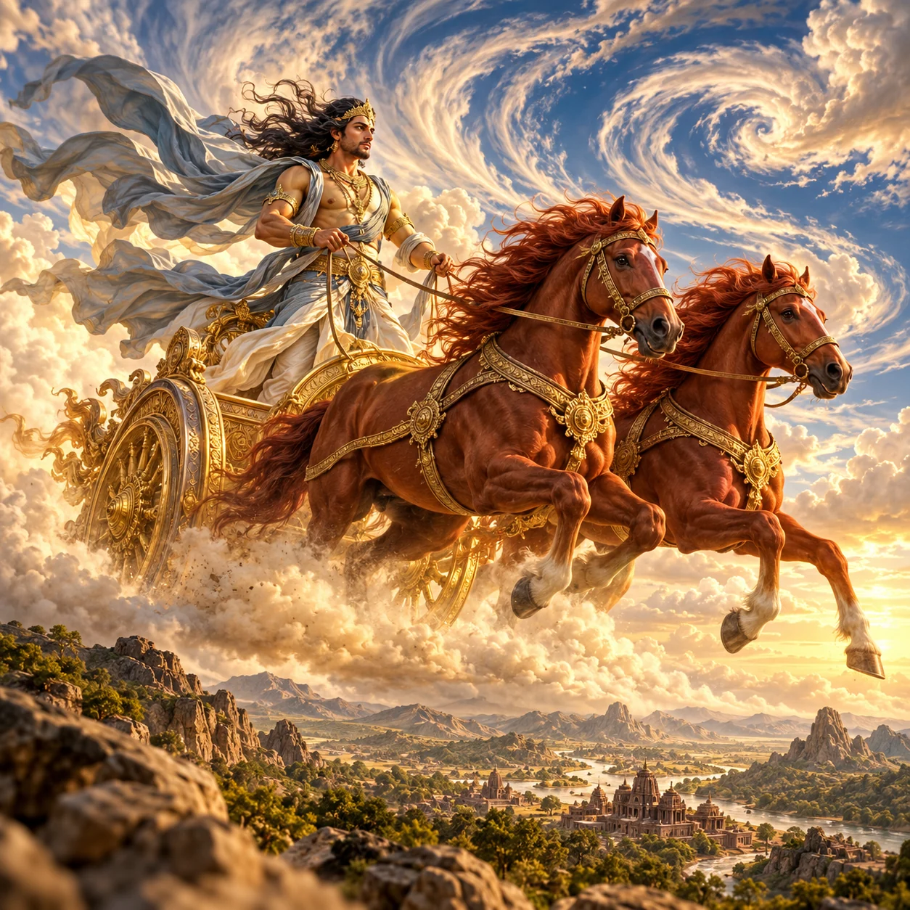
Vayu in shining chariot with exactly two red horses from cited hymn variant.
Aura: Mighty wind/cloud movement grounded in wind deity domain.
Audit ciri dan sumber
- Shining horse chariot — vayu-c10; selected two RED horses — vayu-c14.
- Wind/life breath domain — vayu-c01/c06.
Viewed native: single human man with two arms driving shining chariot drawn by exactly two red-chestnut horses, selected c14 hymn variant. Strong swirling clouds, dust, flying robe and horse manes show wind c01, tiny valley below. No purple/white blend, wings, text or watermark.
Review sumberVAYU: ONE beautiful fully clothed adult human wind deity with one head TWO arms driving a shining chariot drawn by EXACTLY TWO RED-CHESTNUT HORSES, selected specific hymn vayu-c14, do not mix purple/white variant. Mighty WIND visibly sweeps robe folds, horse manes, dust and broad cloud spirals across huge sky (vayu-c01), no wings or wind beams. Tiny ancient Indian valley below, low camera, shining coach with natural golden light, clear horse pair and anatomy, composed majestic life-breath authority (c06). Use case: stylized-concept. Original square premium monumental painterly Mythics encyclopedia illustration, extremely low camera, tiny architecture for scale, clear silhouette, cinematic contrast, rich texture, respectful Hindu faith. No text, writing, watermark, border, logo, nudity, gore, copied media, unsupported limbs or effects.
Aditi
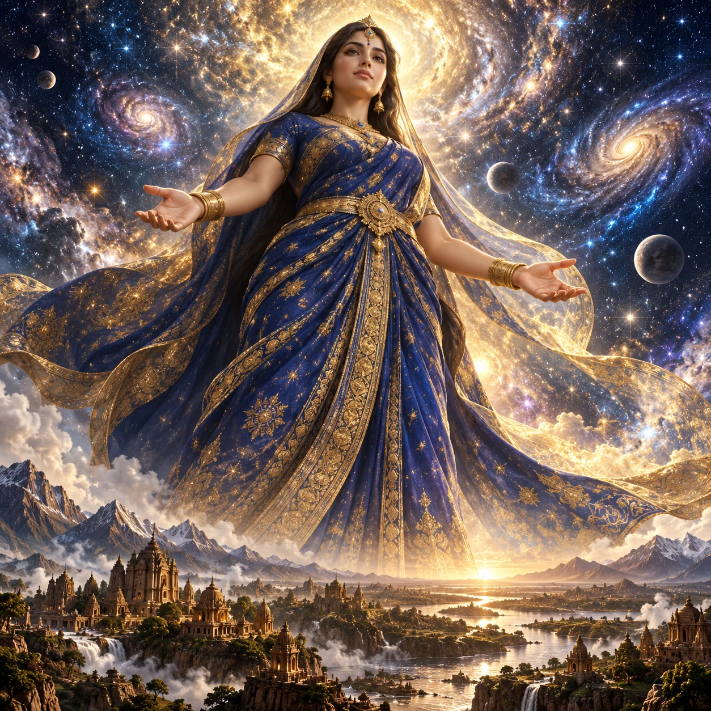
Conservative human Aditi personifying boundless cosmic motherhood.
Aura: Vast ordered stars and luminous cosmic sky grounded in cosmic personification.
Audit ciri dan sumber
- Human mother-goddess appearance editorial.
- Boundless cosmos/sky — aditi-c02/c15.
- Protective maternal presence — aditi-c03/c11.
Viewed native: clothed human woman in blue-gold sari with two arms, protective open palms; immense cosmic galaxies/stars/planets and tiny earthly temples below. Cosmos personification c02 expressed through surrounding celestial environment, not extra anatomy. No energy attack, wings, text or watermark.
Review sumberADITI, Vedic goddess of boundless cosmos and motherhood (aditi-c02/c03): ONE fully clothed adult HUMAN woman, one head TWO arms gently extended in protective maternal gesture (c11), modest deep blue-gold sari and veil, no wings or invented many-arm anatomy. Vast boundless cosmic star field opens behind her over tiny ancient Indian landscape; immense silver-gold celestial light symbolizes cosmos personification c02/c15, stars remain in background, no laser or weapon. Low viewpoint, strong graceful silhouette and benevolent radiant authority. Use case: stylized-concept. Original square premium monumental painterly Mythics encyclopedia illustration, extremely low camera, tiny architecture for scale, clear silhouette, cinematic contrast, rich texture, respectful Hindu faith. No text, writing, watermark, border, logo, nudity, gore, copied media, unsupported limbs or effects.
Adonis
Menunggu gambar yang lolos audit
Amunet
Menunggu gambar yang lolos audit
Avalokiteśvara
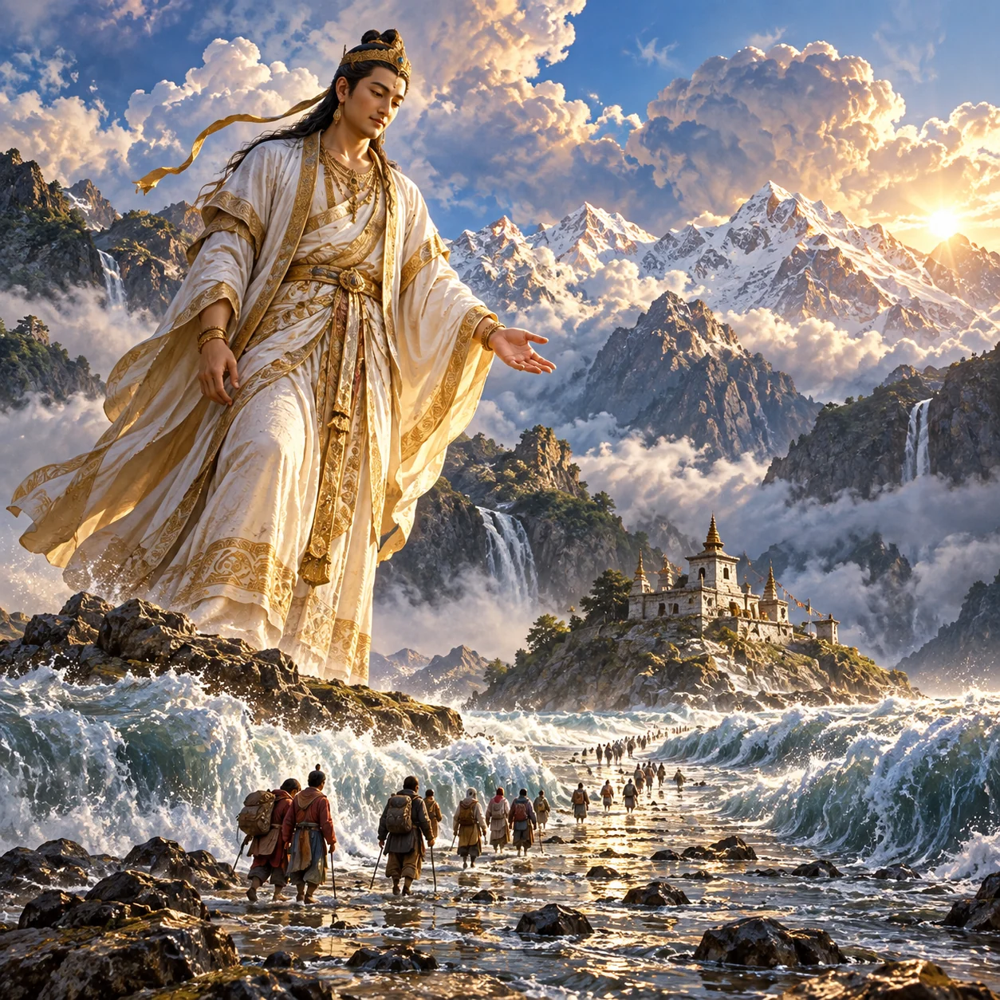
Male bodhisattva in human king guise helping flood-threatened beings, distinct from ten-arm Lokeshvara.
Aura: Flood water subsides into shallow path near protected beings, documented compassionate deliverance.
Audit ciri dan sumber
- Male presentation in Nepal/Tibet — c01.
- Selected king guise is explicit c14; normal two arms, no ten-arm form blending.
- Floods become shallow for protected beings — c12.
Viewed native: serene male-presented human king guise with one head/two arms in white-gold robes, helping hand above shallow river path where tiny pilgrims safely cross between high flood currents. Specific c14 form and c12 deliverance deed, no ten-arm blending, weapon, beam, text or watermark.
Review sumberAVALOKITESVARA, bodhisattva of compassion, explicitly a MALE HUMAN KING GUISE from avalokitesvara-c14 (not ten-arm Lokeshvara form). ONE serene fully clothed adult human male, ONE head TWO arms, modest white-gold robes and restrained royal headband, gentle open helping hand. Stands majestically at a flood-swollen river; in his calm presence deep WATER visibly recedes into a SHALLOW SAFE PATH where tiny clothed pilgrims safely cross, source c12 says flooded beings find shallow water. Himalayan sacred landscape, tiny stone sanctuary and immense blue-silver clouds, natural golden light expresses compassion. Respectful Buddhist portrayal; no weapons, flames, generic energy beams, wings, extra arms/heads. Use case: stylized-concept. Original square premium monumental painterly Mythics encyclopedia image, very low camera, tiny landscape references for scale, clear silhouette, cinematic natural light and rich textures. No text, watermark, logo, border, nudity, gore, copied movies/games/anime or unsupported anatomy/effects.
Baal
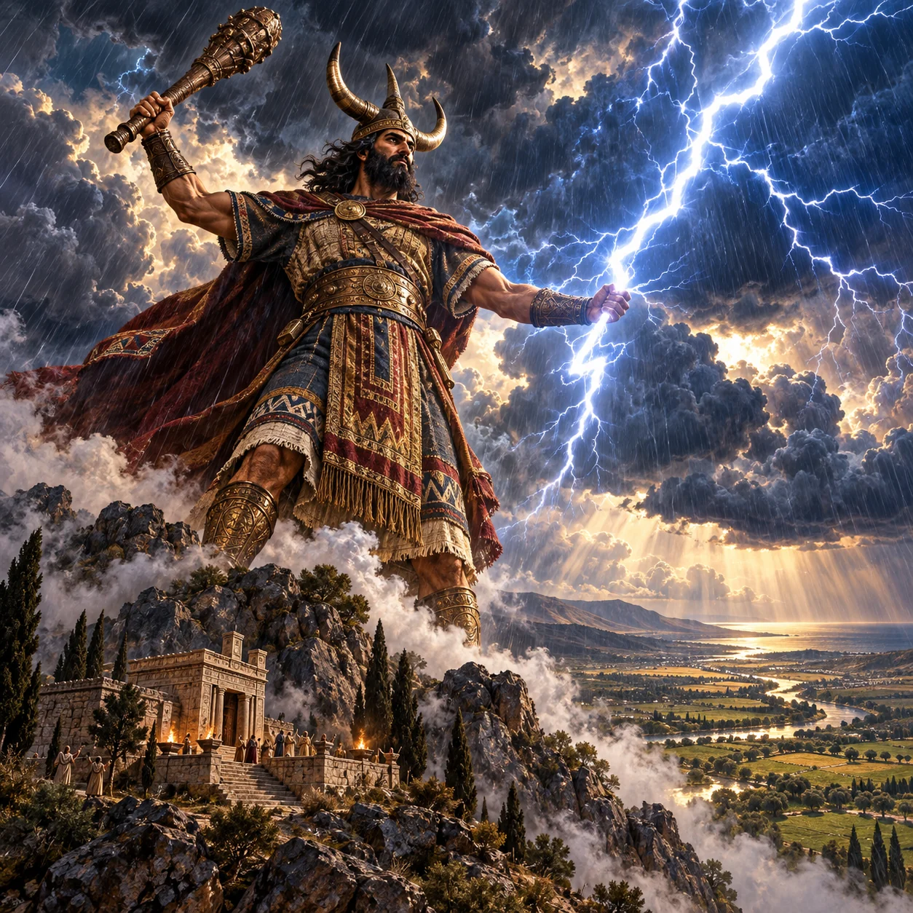
Baal Hadad with horned helmet, club and lightning bolt.
Aura: Strong lightning and rain/clouds explicitly documented c06/c04/c15.
Audit ciri dan sumber
- Horned HELMET, horns on headgear — baal-c14.
- Club and lightning bolt — baal-c06.
- Storm/rain/cloud-rider domain — baal-c04/c15.
Viewed native: one armored human male, two arms, helmet-mounted natural-shaped horns and central helmet finial, raised club and held jagged lightning bolt. Heavy rain, storm clouds and fertile landscape match c04/c06/c14/c15. No skull horns or unsupported body hybrid, no text or watermark.
Review sumberBAAL HADAD, Canaanite storm god: ONE fully clothed adult human male, one head TWO arms, ancient woven battle garment and a HORNED HELMET, horns visibly mounted on helmet NOT growing from skull (baal-c14). Raised CLUB in one hand, brilliant jagged LIGHTNING BOLT in other (baal-c06). Huge thunderclouds and driving RAIN surround his towering Mount Zaphon stance, lightning illuminates fertile distant fields (c04/c11/c15). Tiny Ugaritic stone temple below, menacingly powerful but regal sacred warrior, natural human anatomy, no wings or invented lion form. Use case: stylized-concept. Original square premium monumental painterly Mythics encyclopedia artwork, low angle, clear silhouette, tiny environment references for scale, dramatic cinematic light, rich tactile textures. No text, watermark, logo, border, nudity, gore, modern media borrowing or unsupported anatomy/powers.
Bes
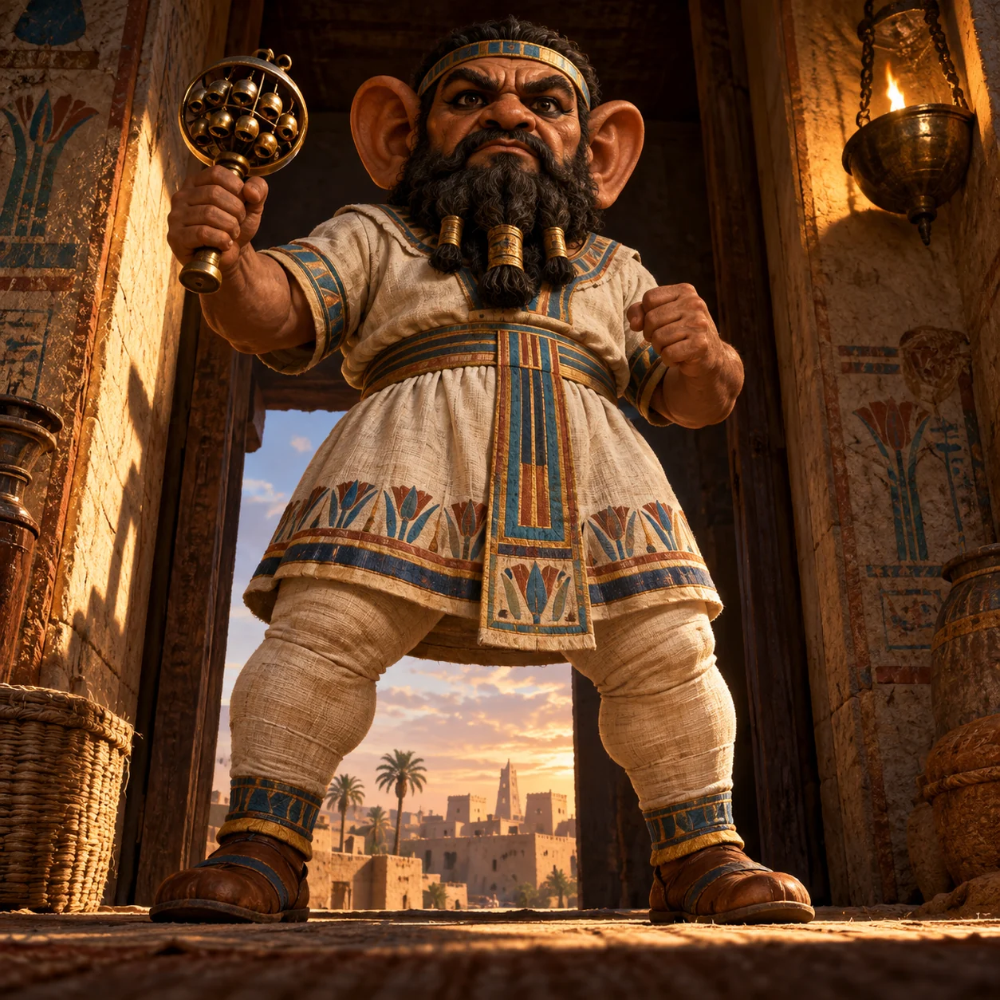
Bearded large-eared bow-legged Bes shaking rattle, fully clothed.
Aura: Protective fierce posture against shadowed threshold, no documented emission effect.
Audit ciri dan sumber
- Bearded dwarf, large ears, bow legs and rattle — bes-c11.
- Forward-facing guardian — bes-c05.
- No-nudity draping omits genital exposure.
Viewed native: front-facing short robust dwarf, beard, very large ears, bowed legs clothed fully in opaque tunic/leggings, two arms with rattle and fist. Low-angle household threshold creates mighty protective presence without inventing rays. No genital exposure, extra limbs, text or watermark.
Review sumberBES, Egyptian household protector: ONE bearded DWARF human-shaped deity with very LARGE EARS and visibly BOWED LEGS, fully clothed in opaque linen tunic and leggings that cover chest/pelvis, no nudity or genital emphasis (bes-c11). Faces DIRECTLY FORWARD (c05), one head TWO arms, shakes a clear hand RATTLE with one hand, other fist braced in protective stance. Low camera at ancient household doorway turns short robust stature into monumental guardian silhouette; tiny distant Egyptian rooftops, natural lantern light and deep doorway shadows, fierce benevolent protective gaze. No animal head, invented horns, wings, magic beams or demon victims. Use case: stylized-concept. Original square premium monumental painterly Mythics encyclopedia artwork, low angle, clear silhouette, tiny environment references for scale, dramatic cinematic light, rich tactile textures. No text, watermark, logo, border, nudity, gore, modern media borrowing or unsupported anatomy/powers.
Circe
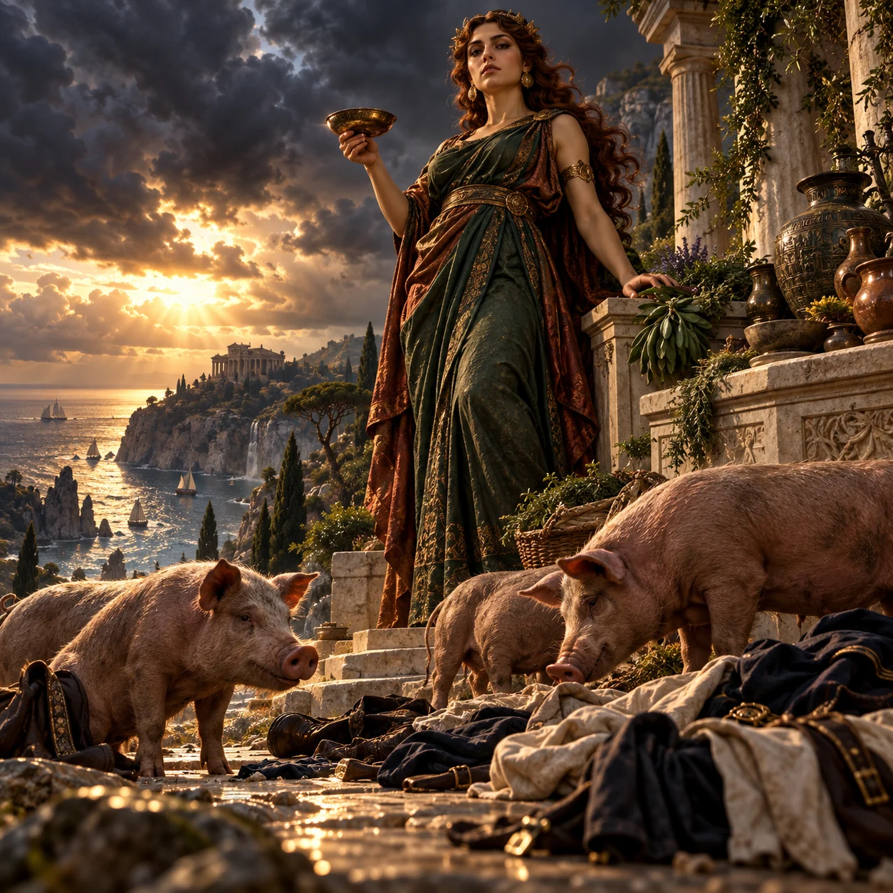
Human Circe with potions and transformed pigs on Aeaea.
Aura: Transformation shown by already-transformed pigs and spilled potion, documented deed rather than colored energy.
Audit ciri dan sumber
- Human sorceress skilled in herbs/potions — circe-c01/c15.
- Aeaea and sailors transformed to pigs — circe-c03/c04.
- No unsupported visible magic-ray effect.
Viewed native: one robed adult human woman with two arms, potion cup, herbs/jars, natural pigs below beside discarded sailors' clothes at island palace. Transformation power shown by documented aftermath, not unsupported glow or mixed anatomy. No wand, nudity, text or watermark.
Review sumberCIRCE, Greek sorceress goddess: ONE adult human woman fully clothed in dark copper/green classical drapery, one head TWO arms, standing high at an Aeaea island palace terrace (circe-c03). One hand holds shallow potion cup, other rests by carefully arranged herbs and ceramic jars, skilled potion practice c01/c15. Below her, natural PIGS stand beside discarded sailors' opaque garments to convey documented human-to-pig transformation c04, no fused human-animal anatomy or grotesque transition. Powerful penetrating composed gaze, monumental low camera, tiny sea boats and wild island forest, natural amber light and stormy dark backdrop, no wand unless quoted claim documents it, no colored magic beam. Use case: stylized-concept. Original square premium monumental painterly Mythics encyclopedia artwork, low angle, clear silhouette, tiny environment references for scale, dramatic cinematic light, rich tactile textures. No text, watermark, logo, border, nudity, gore, modern media borrowing or unsupported anatomy/powers.
Devi
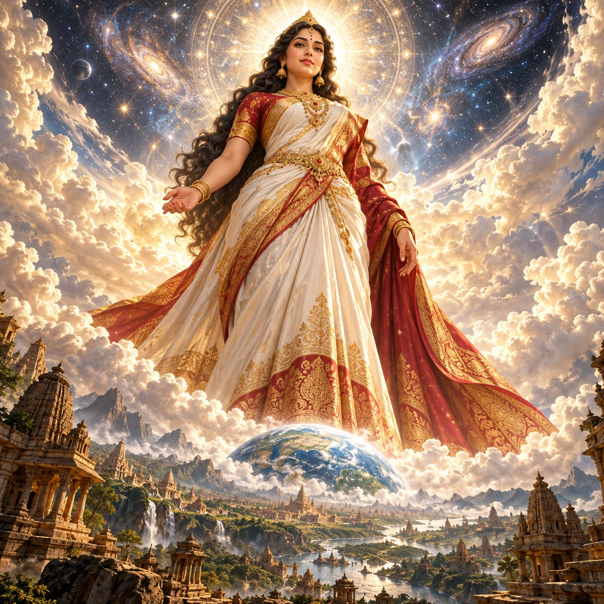
Benevolent Uma aspect of Devi with ordinary human anatomy.
Aura: Vast radiant created heavens and earth grounded in infinite consciousness/creation c13.
Audit ciri dan sumber
- Explicit benevolent UMA aspect — devi-c14.
- One normal human head/two arms, no unsupported Durga-specific weapon/mount.
- Earth/sky creation and cosmic power — devi-c12/c13.
Viewed native: benevolent fully sari-clothed human Uma-as-Devi, two normal arms, vast created cosmos and earth, tiny temple landscape. Radiant celestial geometric light pattern is editorial visualization of infinite consciousness/c13 rather than weapon or anatomical addition. No armed Durga mixing, text or watermark.
Review sumberDEVI, select explicitly BENEVOlent UMA ASPECT (devi-c14), not armed Durga form. ONE fully clothed adult HUMAN woman, one head TWO arms, modest white-gold and deep red sari, gentle powerful serene face. Stands majestically above tiny created EARTH and vast radiant HEAVENS, cosmic starlight and white-gold sky symbolizing infinite consciousness and creation devi-c12/c13, no beam or weapon. Immense balanced sky opening, little ancient Indian temple valley below. No lion mount, trident, extra arms, wings or invented iconography. Respectful Hindu Supreme Goddess sacred portrait. Use case: stylized-concept. Original square premium monumental painterly Mythics encyclopedia portrait. Extremely low viewpoint, clear strong silhouette, tiny architectural references for scale, cinematic contrast and rich detail. Respectful sacred imagery, no text, watermark, logo, border, nudity, gore, copied media, unsupported heads/limbs/effects.
Frigg
Menunggu gambar yang lolos audit
Janus
Menunggu gambar yang lolos audit
Mnemosyne
Menunggu gambar yang lolos audit
Mut
Menunggu gambar yang lolos audit
Neith
Menunggu gambar yang lolos audit
Themis
Menunggu gambar yang lolos audit
Deva (Hinduism)
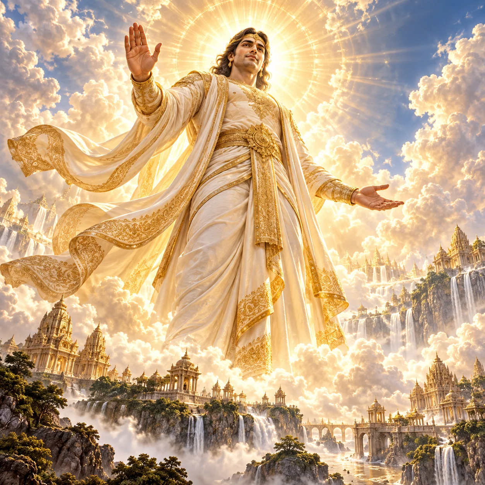
Representative generic benevolent male deva, no named-deity attributes.
Aura: Sacred radiance and heavenly setting grounded in shining/heavenly etymology c03.
Audit ciri dan sumber
- Generic male divine being — c01/c02.
- Shining/heavenly nature — c03.
- Benevolent role — c05; no assigned specific named-deity mount or weapon.
Viewed native: generic male human divine being in opaque ivory-gold clothes, normal one-head/two-arm anatomy, open palm, no specific deity weapon/mount or additional limbs. Vast heavenly cloud architecture and bright radiance grounded in shining/heavenly class meaning c03. No sacred text, caption or watermark.
Review sumberDEVA (HINDUISM), represent the GENERAL class of benevolent male divine heavenly beings (deva-hinduism-c01/c02/c05), not a named god. ONE adult HUMAN male divine figure, normal ONE head TWO arms TWO legs, fully modestly clothed in opaque ivory-gold Indian ceremonial garments and simple gold headband, no weapons, sacred marks, specific mount, extra arms, animal head or wings. Gentle authoritative open-palm gesture, immense SHINING GOLD-WHITE HEAVENLY LIGHT and bright cloud sanctuary grounded in shining/exalted/heavenly meaning c03. Low camera with tiny ancient Indian temple landscape below, radiant benevolent strong silhouette, premium original respectful painting. Use case: stylized-concept. Original square premium monumental painterly Mythics encyclopedia portrait, very low angle, rich tactile detail, powerful clear silhouette, tiny references for scale, dramatic cinematic light. No text, writing, watermark, border, logo, nudity, gore, copied movies/games/anime or unsupported body parts/effects.